<!doctype html>
<html lang="en">
<head>
  <meta charset="utf-8">
  <meta name="viewport" content="width=device-width, initial-scale=1">
  <title>arxiv digest — 2026-10-03</title>
  <style>
:root {
  --bg: #ffffff;
  --fg: #1f2328;
  --muted: #59636e;
  --border: #d0d7de;
  --card: #f6f8fa;
  --link: #0969da;
}
body {
  max-width: 980px;
  margin: 0 auto;
  padding: 2rem 1rem 5rem;
  font-family: -apple-system, BlinkMacSystemFont, "Segoe UI", Helvetica, Arial, sans-serif;
  line-height: 1.55;
  color: var(--fg);
  background: var(--bg);
}
a { color: var(--link); }
img { max-width: 100%; height: auto; }
pre, code { background: var(--card); border-radius: 6px; }
pre { padding: 1rem; overflow-x: auto; }
blockquote { border-left: 4px solid var(--border); padding-left: 1rem; color: var(--muted); }
details { margin: 0.6rem 0; }
summary { cursor: pointer; font-weight: 600; }
.paper-figures-scroll {
  display: flex;
  gap: 1rem;
  overflow-x: auto;
  overscroll-behavior-x: contain;
  padding: 0.75rem 0.25rem 1rem;
  margin: 1rem 0 1.25rem;
  border-top: 1px solid var(--border);
  border-bottom: 1px solid var(--border);
  scroll-snap-type: x proximity;
}
.paper-figure-card {
  flex: 0 0 min(260px, 72vw);
  scroll-snap-align: start;
  background: var(--card);
  border: 1px solid var(--border);
  border-radius: 12px;
  padding: 0.55rem;
}
.paper-figure-card img {
  display: block;
  width: 100%;
  max-height: 240px;
  object-fit: contain;
  background: white;
  border-radius: 8px;
}
.paper-figure-caption {
  display: block;
  margin-top: 0.5rem;
  color: var(--muted);
  font-size: 0.85rem;
}
.figure-strip-hint {
  color: var(--muted);
  font-size: 0.9rem;
  margin-bottom: -0.3rem;
}
</style>
  <!-- MathJax: renders $...$ inline math and $$...$$ display math, plus
       \(...\) and \[...\]. Loaded from the official CDN; works offline
       once cached. Configured to skip code/pre blocks so arxiv IDs that
       look like dollar amounts don't get mangled. -->
  <script>
    window.MathJax = {
      tex: {
        inlineMath: [['$', '$'], ['\\(', '\\)']],
        displayMath: [['$$', '$$'], ['\\[', '\\]']],
        processEscapes: true,
        processEnvironments: true
      },
      options: {
        skipHtmlTags: ['script', 'noscript', 'style', 'textarea', 'pre', 'code'],
        ignoreHtmlClass: 'tex2jax_ignore',
        processHtmlClass: 'tex2jax_process'
      }
    };
  </script>
  <script id="MathJax-script" async
    src="https://cdn.jsdelivr.net/npm/mathjax@3/es5/tex-chtml.js"></script>
</head>
<body>
<header style="background-color: #333; color: white; padding: 15px; margin-bottom: 20px;">
  <h1 style="margin: 0; font-size: 24px;">
    <a href="https://ochelpan.github.io/arXiv_clean/" style="color: white; text-decoration: none;">Main</a>
  </h1>
</header>

<h1>Daily arXiv Report</h1>

<hr>
<p>
<a href="index.html">← Index</a>
 · <a href="papers_02.html">← Previous</a> · <a href="papers_04.html">Next →</a>
</p>
<hr>

<h2>Papers 41–60</h2>
<p><a id="paper-2610.01534"></a></p>
<h3 id="gate-control-improves-routing-efficiency-for-periodic-traffic"><a href="http://arxiv.org/abs/2610.01534v1">Gate Control Improves Routing Efficiency for Periodic Traffic</a></h3>
<p><strong>Authors:</strong> Hyunwook Song, Hoyun Choi, B. Kahng<br>
<strong>Type:</strong> theory · <strong>Category:</strong> statistical mechanics · <strong>PDF:</strong> <a href="https://arxiv.org/pdf/2610.01534v1">https://arxiv.org/pdf/2610.01534v1</a><br>
<strong>Analysis basis:</strong> full PDF text, analyzed in chunks
<strong>Topic relevance:</strong> <code>driven-dissipative phase transition</code> <strong>3/5</strong> · <code>non-equilibrium universality</code> <strong>3/5</strong> · <code>Frenkel-Kontorova</code> <strong>1/5</strong> · <code>Keldysh / 2PI / non-Gaussian methods</code> <strong>1/5</strong> · <code>methods for driven-dissipative</code> <strong>1/5</strong> · <code>quantum measurements</code> <strong>1/5</strong></p>
<div class="figure-strip-hint">↔ Scroll figures horizontally</div>
<div class="paper-figures-scroll">
<figure class="paper-figure-card">
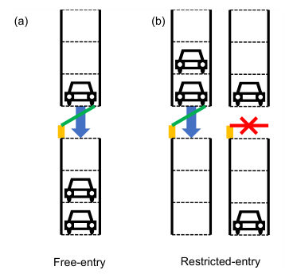
<figcaption class="paper-figure-caption"><b>Fig 1.</b> FIG. 1. Two gate control protocols. (a) In the free-entry (FE) protocol, the gate remains open regardless of the flow- ing queue state, enabling unrestricted entry from the waiting queue. (b) In contrast, the restricted-entry (RE) protocol per- mits entry to the flowing queue only when it is empty (fi = 0).</figcaption>
</figure>
<figure class="paper-figure-card">
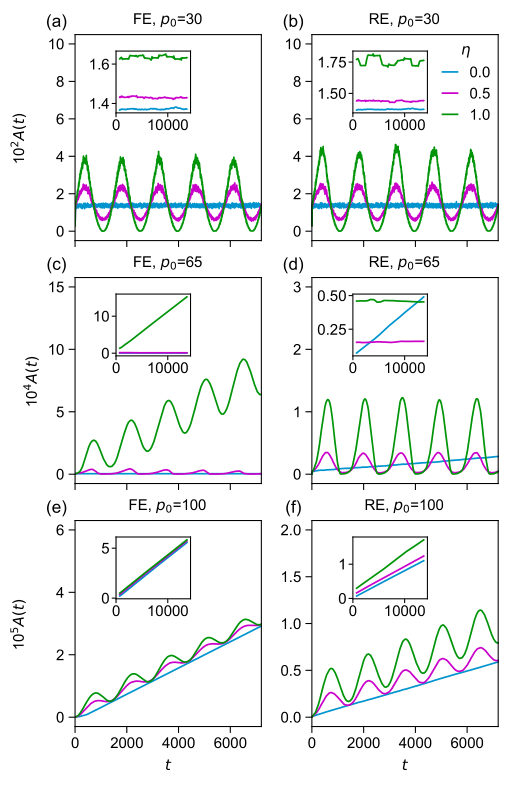
<figcaption class="paper-figure-caption"><b>Fig 2.</b> FIG. 2. Temporal evolution of the total number of vehicles in queues, A(t), as a function of time step t with a driving period of T = 1440. Results for the free-entry (FE) protocol are shown in left column and for the restricted-entry (RE) protocol in right column. Each color represents a different amplitude η (see legend in (b)). Insets show the time average of A(t) with window length T. At intermediate p0 ((c), (d)), FE and RE exhibit opposite trends with increasing η due to the asymmetric behavior in Fig. 3(e) and (f).</figcaption>
</figure>
<figure class="paper-figure-card">
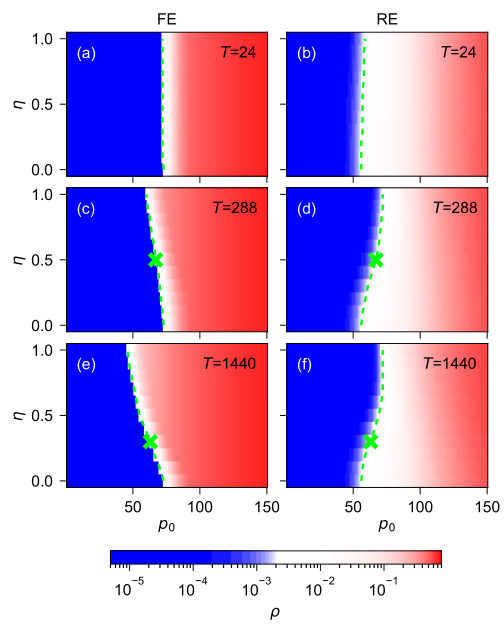
<figcaption class="paper-figure-caption"><b>Fig 3.</b> FIG. 3. Order parameter ρ vs. p0, η, and T. Green dashed curves represent the transition curves pc(η) for each T. For the FE, the order parameter increases drastically beyond pc as p0 increases. This indicates that the transition is discontinuous. On the other hand, for the RE, the order parameter increases gradually beyond pc as p0 increases, indicating a continuous transition. The green cross represents the point where pc of FE and RE are same.</figcaption>
</figure>
<figure class="paper-figure-card">
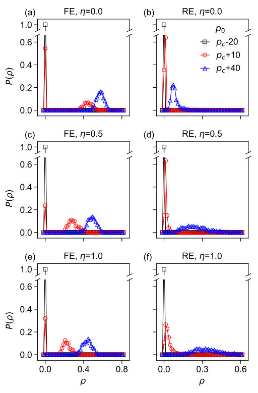
<figcaption class="paper-figure-caption"><b>Fig 4.</b> FIG. 4. The order parameter distribution P(ρ) at T = 1440 for the free-entry (FE, left column) and restricted-entry (RE, right column) protocols at different amplitude values η. The FE protocol displays two distinct peaks, whereas the RE pro- tocol exhibits a single peak.</figcaption>
</figure>
<figure class="paper-figure-card">
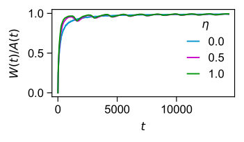
<figcaption class="paper-figure-caption"><b>Fig 5.</b> FIG. 6. Fraction of vehicles in waiting queues throughout the dynamics of a RE system in the jammed phase for different η. Most vehicles accumulate in the waiting queues, resulting in W/A ≈1.</figcaption>
</figure>
</div>

<p><strong>Summary.</strong> This paper models traffic flow on complex networks using a two-queue system and compares two control protocols: Free Entry (FE) and Restricted Entry (RE). It demonstrates that the RE protocol acts as a superior self-regulating buffer, mitigating the severity of congestion and changing the jamming transition from abrupt to gradual, especially when external demand fluctuates periodically.</p>
<p><strong>Why it may be interesting.</strong> The study of non-equilibrium dynamics, phase transitions (jamming), and the effect of external periodic forcing on collective behavior is directly relevant to non-equilibrium statistical mechanics and open quantum systems.</p>
<details>
<summary>Detailed structure</summary>
<p><strong>Main problem.</strong> The paper investigates how regulating entry into a main flow queue, using a two-queue gate control mechanism, improves routing efficiency in complex networks subjected to periodic traffic fluctuations.</p>
<p><strong>Main result.</strong> The restricted entry (RE) protocol significantly outperforms the free-entry (FE) protocol, particularly under large periodic fluctuations, by replacing sudden jamming transitions with gradual, continuous ones.</p>
<p><strong>Method.</strong> The analysis uses macroscopic and microscopic modeling of traffic flow, comparing the dynamics of FE and RE protocols using order parameters and time-averaged system occupancy.</p>
<p><strong>Model / system.</strong> The model simulates traffic movement on complex networks (like ER or BA graphs) using a two-queue system (waiting and flowing queues) at each node, driven by a time-varying external demand.</p>
<p><strong>Key observables.</strong> Total system vehicles A(t), order parameter $\rho$ (congestion rate), and the critical transition point $p_c$.</p>
<p><strong>Important parameters / regimes.</strong> Periodic fluctuation amplitude $\eta$, driving period $T$, and the traffic-awareness parameter $h$.</p>
<p><strong>Assumptions / limitations.</strong> The approach relies on a simple local rule using only local queue information, making it highly implementable.</p>
<p><strong>Figures summary.</strong> Figures illustrate the temporal evolution of system occupancy $A(t)$ for both protocols under varying $\eta$, and phase diagrams showing the transition point $p_c$ dependence on $\eta$ for both FE and RE.</p>
<p><strong>Paper structure.</strong> The paper progresses from defining the two-queue model and protocols (FE vs. RE) to performing macroscopic analysis of congestion transitions ($\rho$ vs. $p_0$), and finally analyzing the impact of periodic forcing ($\eta > 0$) on the stability and transition characteristics.</p>
</details>
<details>
<summary>Abstract</summary>
<p>Traffic movement on highways and data packet transmission across the Internet serve as prototypical examples of collective dynamical behavior in complex systems. Although enhancing traffic flow in complex networks has been extensively investigated, most existing studies focus on single-queue models. In this paper, we introduce a simple yet effective two-queue scheme with gate control that regulates vehicle entry and integrates it with the routing protocol. When vehicles arrive at a on-ramp gate, they first join a waiting queue and are permitted to enter the main flowing queue once it has emptied. This two-queue strategy is especially advantageous when highway inflow varies periodically with large fluctuations, as is commonly observed in real traffic. Moreover, it modifies the system's failure characteristics, replacing sudden, discontinuous jamming transitions with gradual, continuous ones. The approach is based on a simple rule using only local queue information, making it easy to implement and widely applicable. Beyond the specific setup studied here, it can be applied to other transportation networks under different conditions or extended to other queuing systems, such as Internet data packet routing.</p>
</details>
<p><sub><a href="#top">↑ back to top</a></sub></p>

<p><a id="paper-2610.01190"></a></p>
<h3 id="rapid-mixing-of-quantum-spin-chains-at-any-finite-temperature"><a href="http://arxiv.org/abs/2610.01190v1">Rapid mixing of quantum spin chains at any finite temperature</a></h3>
<p><strong>Authors:</strong> Leeseok Kim<br>
<strong>Type:</strong> theory · <strong>Category:</strong> statistical mechanics · <strong>PDF:</strong> <a href="https://arxiv.org/pdf/2610.01190v1">https://arxiv.org/pdf/2610.01190v1</a><br>
<strong>Analysis basis:</strong> full PDF text, analyzed in chunks
<strong>Topic relevance:</strong> <code>methods for driven-dissipative</code> <strong>3/5</strong> · <code>analog quantum simulation</code> <strong>2/5</strong> · <code>Keldysh / 2PI / non-Gaussian methods</code> <strong>1/5</strong> · <code>correlated / nonlocal dissipation</code> <strong>1/5</strong> · <code>driven-dissipative phase transition</code> <strong>1/5</strong> · <code>non-equilibrium universality</code> <strong>1/5</strong> · <code>scars &amp; prethermalization</code> <strong>1/5</strong></p>
<div class="figure-strip-hint">↔ Scroll figures horizontally</div>
<div class="paper-figures-scroll">
<figure class="paper-figure-card">
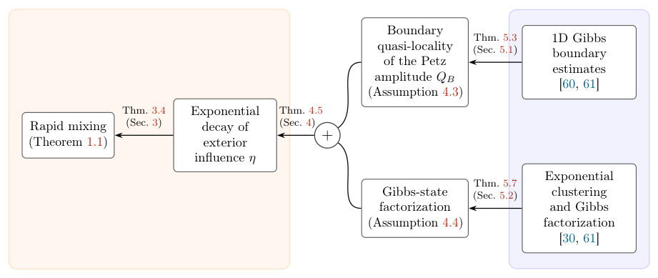
<figcaption class="paper-figure-caption"><b>Fig 1.</b> Figure 1: Proof outline of Theorem 1.1, read from right to left. The blue panel collects existing results on static properties of 1D Gibbs states [30, 61, 60], which prove Assumptions 4.3 and 4.4. Together, these imply the dynamical consequences shown in the orange panel: exponentially decaying exterior influence, exponential contraction in quantum W1 distance, and rapid mixing. The paper is intentionally organized in the reverse order.</figcaption>
</figure>
<figure class="paper-figure-card">
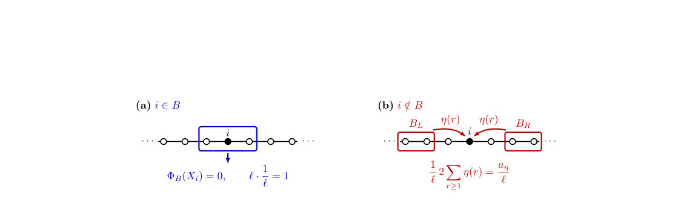
<figcaption class="paper-figure-caption"><b>Fig 2.</b> Figure 2: Erasure-versus-influence balance for an i-anchored discrepancy Xi. (a) The ℓblocks containing i erase Xi exactly, with total rate 1. (b) Blocks missing i contribute an additional influence rate at most aη/ℓ.</figcaption>
</figure>
<figure class="paper-figure-card">
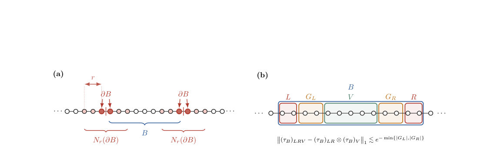
<figcaption class="paper-figure-caption"><b>Fig 3.</b> Figure 3: The two static inputs used to control the exterior influence of a block update. (a) Assumption 4.3: the conditional Petz amplitude QB admits exponentially accurate, uniformly bounded approximations supported in a growing neighborhood of ∂B (c0 = 0 in the schematic). (b) Assumption 4.4: for a decomposition B = LGLV GRR, the boundary region L ∪R and the central region V approximately factorize, with an error that decays exponentially in min{|GL|, |GR|}.</figcaption>
</figure>
<figure class="paper-figure-card">
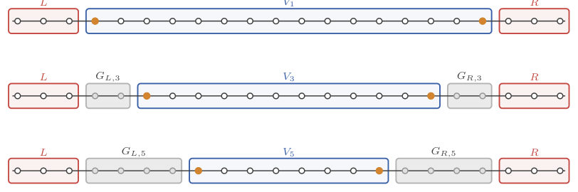
<figcaption class="paper-figure-caption"><b>Fig 4.</b> Figure 4: Layer decomposition for Lemma 4.10. Depolarized buffers GL,k and GR,k (gray) separate the fixed boundaries L, R (red) from the remaining interval Vk (blue). Orange sites form the next layer Γk. Although |Γk| ≤2, the B support of ∆kA may extend throughout Vk. Only B is shown.</figcaption>
</figure>
<figure class="paper-figure-card">
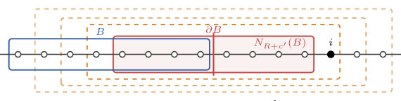
<figcaption class="paper-figure-caption"><b>Fig 5.</b> Figure 5: Shell decomposition used in the proof of Theorem 4.5. For a site i /∈B at distance d = dist(i, B), the radius R is chosen so that supp bQB,R does not reach i. The successive shell enlargements with r &gt; R form the tail in the telescoping expansion of Φ† B(A) in Eq. (91). Only the boundary of B closest to i is shown.</figcaption>
</figure>
</div>

<p><strong>Summary.</strong> This paper proves that quantum Gibbs samplers rapidly mix to the true thermal Gibbs state for 1D quantum spin chains at any temperature. The mixing time scales logarithmically with system size, $O(\log(n/\epsilon))$, and the required quantum circuit depth for state preparation is also polylogarithmic. This provides a powerful theoretical tool for simulating thermalization in quantum many-body physics.</p>
<p><strong>Why it may be interesting.</strong> This work provides rigorous, resource-efficient theoretical guarantees for simulating thermalization dynamics in quantum many-body systems, which is crucial for understanding quantum thermalization and equilibrium states.</p>
<details>
<summary>Detailed structure</summary>
<p><strong>Main problem.</strong> The paper aims to prove the rapid mixing time of quantum Gibbs samplers for 1D quantum spin chains at any finite temperature.</p>
<p><strong>Main result.</strong> Rapid mixing is proven for the quantum block heat-bath dynamics in $O(\log(n/\epsilon))$ time, and the Gibbs state preparation can be done with $O(	ext{polylog}(n/\epsilon))$ quantum circuit depth.</p>
<p><strong>Method.</strong> The analysis uses a path-coupling argument bounding the evolution in the quantum Wasserstein distance of order 1, combined with techniques for approximating quantum channels with efficient quantum circuits.</p>
<p><strong>Model / system.</strong> The system is a 1D quantum spin chain on a periodic lattice ($\mathbb{Z}/n\mathbb{Z}$) governed by a nearest-neighbor Hamiltonian. The dynamics are simulated using a quantum block heat-bath process defined by a Lindbladian.</p>
<p><strong>Key observables.</strong> Mixing Time ($t_{	ext{mix}}$), Quantum Wasserstein distance ($W_1$), and Quantum Circuit Depth.</p>
<p><strong>Important parameters / regimes.</strong> Finite temperature ($eta$), system size ($n$), error tolerance ($\epsilon$), and constant block length ($\ell$).</p>
<p><strong>Assumptions / limitations.</strong> The Hamiltonian is assumed to have bounded local interactions, and the proof relies on establishing specific boundary estimates and Lipschitz control conditions.</p>
<p><strong>Figures summary.</strong> Figure 1 outlines the proof structure linking static properties to dynamical mixing. Table 1 compares the derived mixing time bound against other known results for spin systems.</p>
<p><strong>Paper structure.</strong> The paper establishes the rapid mixing result using the quantum Wasserstein distance, followed by providing an explicit quantum circuit depth bound for state preparation. Later sections confirm the optimality of the logarithmic scaling for both periodic and open boundary conditions.</p>
</details>
<details>
<summary>Abstract</summary>
<p>We prove that a quasi-local quantum Gibbs sampler rapidly mixes to the Gibbs state of any 1D finite-range Hamiltonian at all finite temperatures in $\mathcal{O}\left(\log (n/\varepsilon)\right)$ time. Each update traces out a contiguous block of constant length and reconstructs it using the Petz recovery map, following early proposals for quantum heat-bath Gibbs samplers by Kastoryano and Brandão~\cite{kastoryano2016quantum}. Our proof directly bounds the distance between the updated state and the target Gibbs state using quantum Wasserstein distance of order $1$. We further provide $\mathcal{O}(\text{polylog}(n/\varepsilon))$ depth of quantum circuits to prepare these Gibbs states. We hope these techniques will facilitate the analysis and design of other Gibbs samplers.</p>
</details>
<p><sub><a href="#top">↑ back to top</a></sub></p>

<p><a id="paper-2610.01929"></a></p>
<h3 id="stationarity-and-angular-momentum-conservation-in-pulsar-spin-noise"><a href="http://arxiv.org/abs/2610.01929v1">Stationarity and angular momentum conservation in pulsar spin noise</a></h3>
<p><strong>Authors:</strong> Reginald Christian Bernardo<br>
<strong>Type:</strong> theory · <strong>Category:</strong> statistical mechanics · <strong>PDF:</strong> <a href="https://arxiv.org/pdf/2610.01929v1">https://arxiv.org/pdf/2610.01929v1</a><br>
<strong>Analysis basis:</strong> full PDF text, analyzed in chunks
<strong>Topic relevance:</strong> <code>Keldysh / 2PI / non-Gaussian methods</code> <strong>3/5</strong> · <code>methods for driven-dissipative</code> <strong>3/5</strong> · <code>quantum measurements</code> <strong>3/5</strong> · <code>correlated / nonlocal dissipation</code> <strong>1/5</strong></p>
<div class="figure-strip-hint">↔ Scroll figures horizontally</div>
<div class="paper-figures-scroll">
<figure class="paper-figure-card">
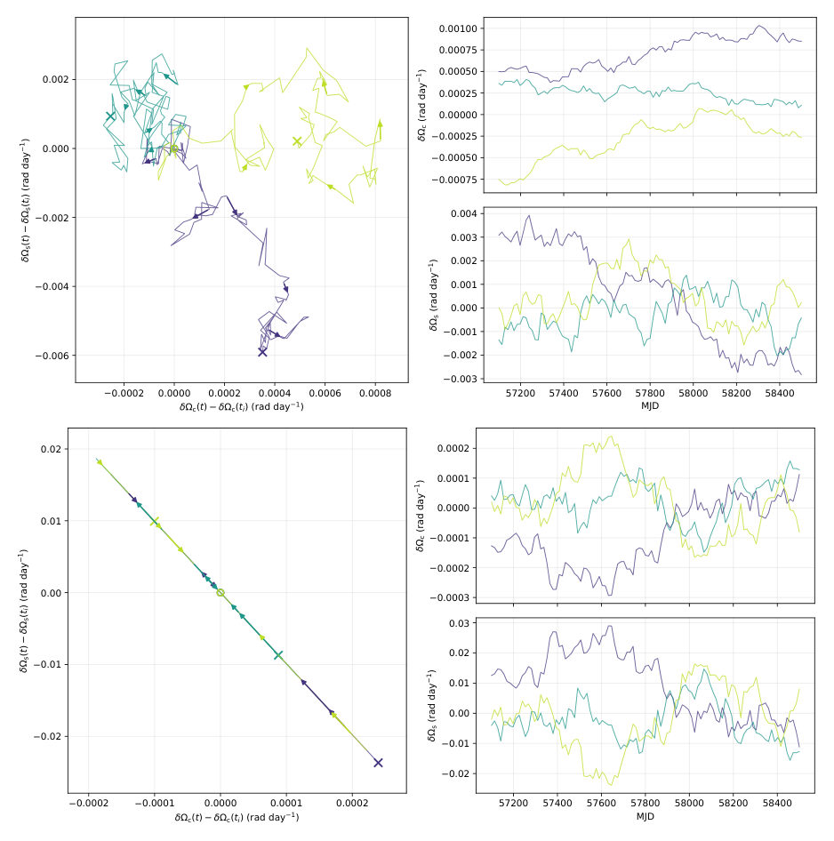
<figcaption class="paper-figure-caption"><b>Fig 1.</b> Figure 1. Sample realizations of the singular, nonstationary model (1–5) and the minimal, stationary model (19-21) with parameters in Tables 1 and 4.</figcaption>
</figure>
<figure class="paper-figure-card">
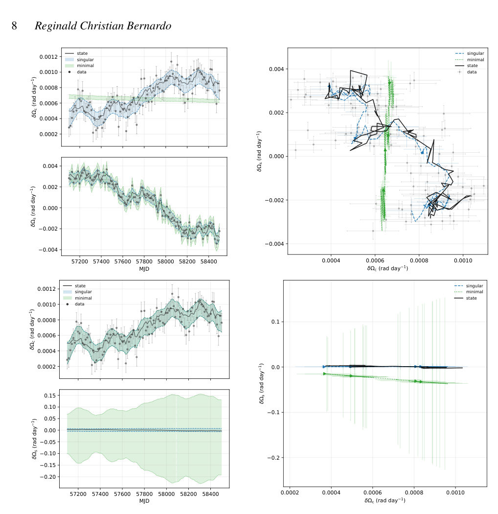
<figcaption class="paper-figure-caption"><b>Fig 2.</b> Figure 2. Reconstruction of a singular model realization using the singular and minimal models. The top figure uses full-state observations of the crust and superfluid. The lower figure uses crust-only observations. The left panels show the component time series and 95 percent reconstruction bands, while the right panels show the 2D trajectories. The black curve is the true state, the points with error bars are the mock data, and the blue and green curves denote the singular and minimal reconstructions, respectively.</figcaption>
</figure>
<figure class="paper-figure-card">
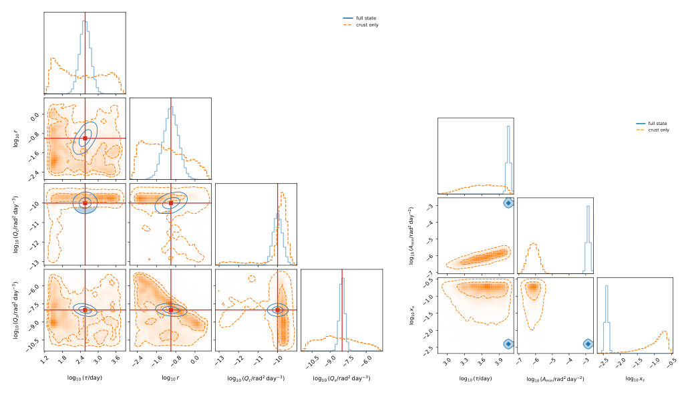
<figcaption class="paper-figure-caption"><b>Fig 3.</b> Figure 3. Parameter posteriors for the singular model realization (Table 1) analyzed with the singular model (left) and the minimal model (right). Blue solid distributions use full-state observations and orange dashed distributions use crust-only observations. Red lines mark the injected parameters only in the generating-model panel. Contours enclose 68 and 95 percent posterior probability.</figcaption>
</figure>
<figure class="paper-figure-card">
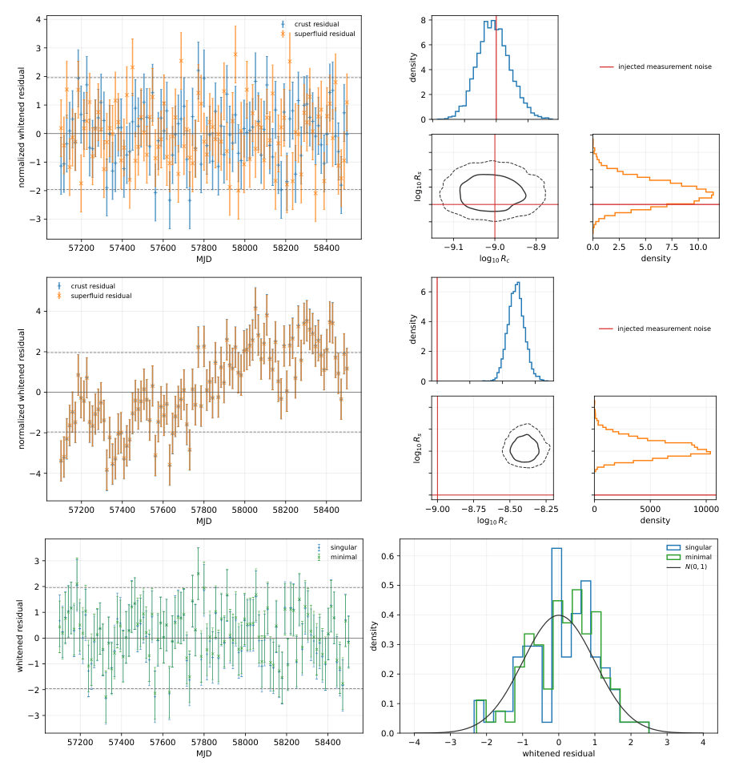
<figcaption class="paper-figure-caption"><b>Fig 4.</b> Figure 4. Noise diagnostics for the singular model realization. From top to bottom, the figures show the full-state singular fit, the full-state minimal fit, and the crust-only whitened residuals. In the full-state panels, + and × mark the normalized crust and superfluid residuals. The right panels show the residual-based estimates of 𝑅c and 𝑅s, with solid and dashed contours enclosing 68 and 95 percent probability. Red lines mark the measurement noise parameters.</figcaption>
</figure>
<figure class="paper-figure-card">
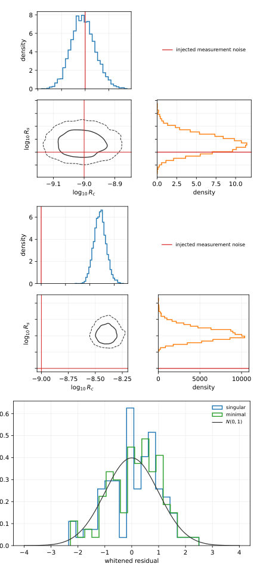
<figcaption class="paper-figure-caption"><b>Fig 5.</b> Figure 2 shows the reconstructions in a reference realization. We</figcaption>
</figure>
</div>

<p><strong>Summary.</strong> This paper analyzes pulsar spin noise using a two-component model for a neutron star's rotation, distinguishing between models where total angular momentum is conserved (stationary) versus those where it diffuses (nonstationary). By developing Gaussian process methods, the authors show that joint observations of both the crust and superfluid components are necessary to robustly test the fundamental question of angular momentum conservation in these extreme astrophysical objects.</p>
<p><strong>Why it may be interesting.</strong> The rigorous application of Gaussian process methods to model complex, multi-component stochastic dynamics in a physical system like a neutron star provides a template for analyzing open quantum systems where multiple coupled degrees of freedom are involved.</p>
<details>
<summary>Detailed structure</summary>
<p><strong>Main problem.</strong> The central problem is testing the stationarity of pulsar spin noise, which is equivalent to determining whether the total angular momentum of a neutron star is conserved.</p>
<p><strong>Main result.</strong> The authors show that the two-component model can be analyzed for both nonstationary (diffusive) and stationary (conserved) dynamics, and these models are fully testable using joint observations.</p>
<p><strong>Method.</strong> The analysis develops scalable Gaussian process methods to construct and analyze the likelihood function for observing both the crust and superfluid rotational states simultaneously.</p>
<p><strong>Model / system.</strong> The system is a two-component dynamical model of a neutron star's rotation, involving a crust component and a superfluid component, whose dynamics are governed by stochastic torques.</p>
<p><strong>Key observables.</strong> Pulsar timing data (measuring the crust's rotational state) and continuous gravitational wave observations (inferred superfluid interior dynamics).</p>
<p><strong>Important parameters / regimes.</strong> Relaxation time scale ($    au$), ratio ($r$), and various steady-state averages ($\langle\langle\alpha_c
angle
angle, \langle\langle\Delta\Omega
angle
angle, Q_c, Q_s$).</p>
<p><strong>Assumptions / limitations.</strong> Robust inference is difficult if only one component (e.g., crust) is observationally accessible, and the analysis relies on the assumption of Gaussian noise processes.</p>
<p><strong>Figures summary.</strong> Figure C3 shows parameter posteriors for singular Brownian motion, comparing fixed noise vs. joint state+noise estimation, and includes noise diagnostics for residuals.</p>
<p><strong>Paper structure.</strong> The paper develops the two-component model, derives the necessary Gaussian process methods, and then applies these methods to distinguish between the nonstationary (diffusive) and stationary (conserved) limits of the total angular momentum.</p>
</details>
<details>
<summary>Abstract</summary>
<p>We present an analysis of pulsar spin noise based on physically-motivated two-component models of spin wandering. We focus on two models, distinguished by their total angular momentum dynamics: a singular, nonstationary model with a diffusive total angular momentum, and a minimal, stationary model anchored on a conserved total angular momentum. We develop scalable Gaussian process methods and, using mock data, show that the two models are fully testable and distinguishable with full-state observations, i.e., simultaneous independent data on the crust and the superfluid rotational states. This paves a path to testing stationarity in pulsar spin noise, potentially achievable with joint continuous gravitational wave observations and radio timing of pulsars. However, robust inferences and predictions are harder to achieve, and depend on the priors and data quality, when only one component is observationally accessible.</p>
</details>
<p><sub><a href="#top">↑ back to top</a></sub></p>

<p><a id="paper-2610.01167"></a></p>
<h3 id="vector-chiral-order-and-dynamical-quantum-phase-transitions-in-an-ising-chain-with-dimerized-anisotropic-gamma-interaction"><a href="http://arxiv.org/abs/2610.01167v1">Vector chiral order and dynamical quantum phase transitions in an Ising chain with dimerized anisotropic Gamma interaction</a></h3>
<p><strong>Authors:</strong> Yu-Hong Yan, Shi-Qiao Wu, Kun-Liang Zhang<br>
<strong>Type:</strong> theory · <strong>Category:</strong> statistical mechanics · <strong>PDF:</strong> <a href="https://arxiv.org/pdf/2610.01167v1">https://arxiv.org/pdf/2610.01167v1</a><br>
<strong>Analysis basis:</strong> full PDF text, analyzed in chunks
<strong>Topic relevance:</strong> <code>non-equilibrium universality</code> <strong>3/5</strong> · <code>Keldysh / 2PI / non-Gaussian methods</code> <strong>2/5</strong> · <code>analog quantum simulation</code> <strong>2/5</strong> · <code>methods for driven-dissipative</code> <strong>2/5</strong> · <code>driven-dissipative phase transition</code> <strong>1/5</strong></p>
<div class="figure-strip-hint">↔ Scroll figures horizontally</div>
<div class="paper-figures-scroll">
<figure class="paper-figure-card">
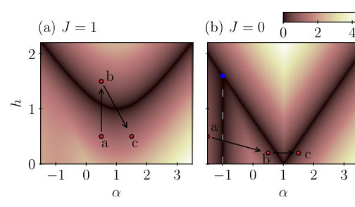
<figcaption class="paper-figure-caption"><b>Fig 1.</b> FIG. 1. The contour map of the energy gap ∆as a function of α and h for the cases of (a) nonzero Ising interaction J = 1 and (b) zero Ising interaction J = 0. The black lines are critical lines that indicate the closing of the energy gap ∆= 0, and there is an additional critical line (marked with dashed line) when J = 0. In both cases we take Γ = 0.8.</figcaption>
</figure>
<figure class="paper-figure-card">
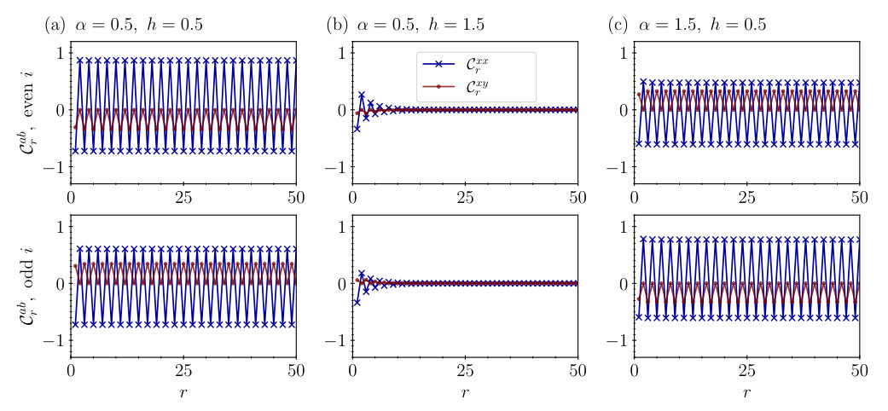
<figcaption class="paper-figure-caption"><b>Fig 2.</b> FIG. 2. The correlation functions Cxx r and Cxy r with respect to distance r for the case of J = 1 and for different α and h. The top and bottom panels show the correlation functions for even and odd i sites, respectively, with r = j −i. The values of α and h are marked in Fig. 1(a) for each panels: left panel (a) α = 0.5, h = 0.5; middle panel (b) α = 0.5, h = 1.5 and right panel (c) α = 1.5, h = 0.5. Other parameters are taken as Γ = 0.8 and N = 1000.</figcaption>
</figure>
<figure class="paper-figure-card">
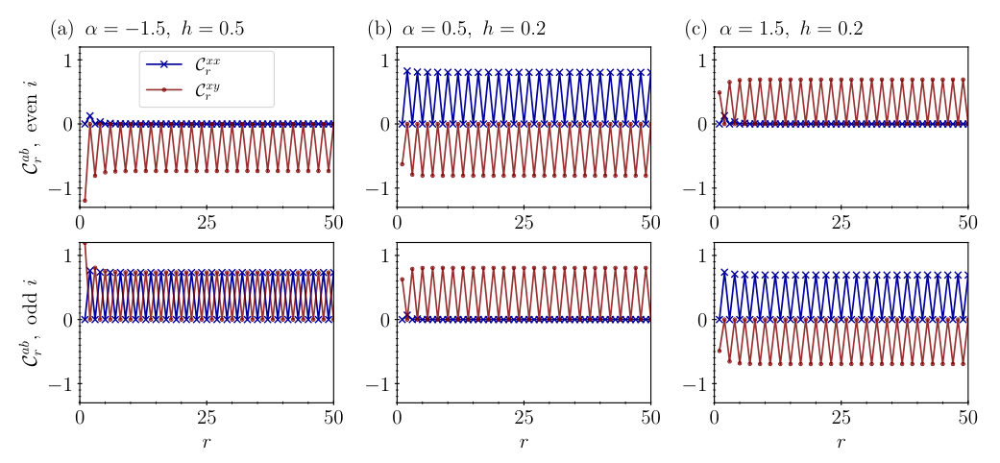
<figcaption class="paper-figure-caption"><b>Fig 3.</b> FIG. 3. The correlation functions Cxx r and Cxy r with respect to distance r for the case of J = 0 and for different α and h. The top and bottom panels show the correlation functions for even and odd i sites, respectively, with r = j −i. The values of α and h are marked in Fig. 1(b) for each panels: left panel (a) α = −1.5, h = 0.5; middle panel (b) α = 0.5, h = 0.2 and right panel (c) α = 1.5, h = 0.2. Other parameters are taken as Γ = 0.8 and N = 1000.</figcaption>
</figure>
<figure class="paper-figure-card">
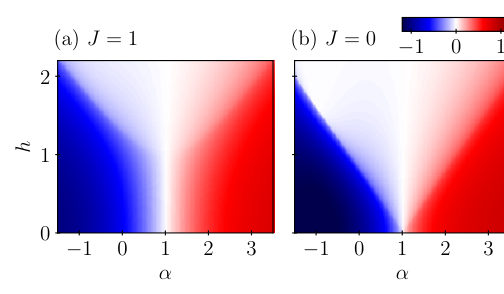
<figcaption class="paper-figure-caption"><b>Fig 4.</b> FIG. 4. The contour map of the staggered chiral order pa- rameter Oxy stag as a function of α and h. (a) J = 1. (b) J = 0. In both cases we take Γ = 0.8, i = 100 and N = 200.</figcaption>
</figure>
<figure class="paper-figure-card">
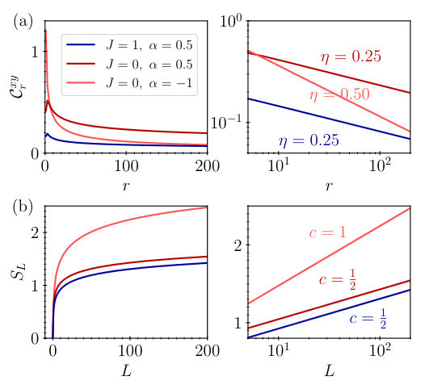
<figcaption class="paper-figure-caption"><b>Fig 5.</b> FIG. 5. (a) Correlation function Cxy r with respect to distance r; (b) Subsystem entanglement entropy SL with respect to subsystem size L for three representative critical points: (i) J = 1, α = 0.5, hc = p</figcaption>
</figure>
</div>

<p><strong>Summary.</strong> This work investigates a quantum Ising chain with complex anisotropic interactions to map out its phase diagram and dynamic critical points. By analyzing vector chiral order, entanglement entropy, and the Loschmidt amplitude, the authors demonstrate that the competition between different interactions leads to rich quantum phases and distinct dynamical critical behaviors. It highlights how off-diagonal exchange terms significantly enrich both the static and time-dependent physics of the quantum magnet.</p>
<p><strong>Why it may be interesting.</strong> The paper provides a detailed study of how geometric frustration (dimerization) and anisotropic interactions enrich both the equilibrium phase diagram (chiral order) and the non-equilibrium dynamics (DQPTs), offering rich material for understanding quantum criticality beyond simple Ising models.</p>
<details>
<summary>Detailed structure</summary>
<p><strong>Main problem.</strong> The study investigates the emergence of vector chiral order and the nature of dynamical quantum phase transitions (DQPTs) in a quantum Ising chain subjected to dimerized anisotropic Gamma interactions.</p>
<p><strong>Main result.</strong> The competition between Gamma anisotropy and the transverse field dictates the phase diagram, revealing distinct critical behaviors, including a gapless critical line in the absence of Ising interactions and periodic/aperiodic sequences for critical times.</p>
<p><strong>Method.</strong> The analysis employs theoretical techniques including Jordan-Wigner transformation, mapping the system to a fermionic Hamiltonian, and utilizing the Loschmidt amplitude to probe non-equilibrium dynamics.</p>
<p><strong>Model / system.</strong> The system is a transverse-field Ising chain incorporating dimerized anisotropic Gamma interactions. The Hamiltonian is analyzed using a Bogoliubov quasiparticle formulation, which is then used to calculate correlation functions and the Loschmidt amplitude.</p>
<p><strong>Key observables.</strong> Vector spin chirality, vector chiral order parameter, spin-spin correlation functions ($C_{xx}^r, C_{xy}^r$), subsystem entanglement entropy ($S_L$), and the Loschmidt amplitude/rate function ($G(t), g(t)$).</p>
<p><strong>Important parameters / regimes.</strong> Transverse field ($h$), Ising coupling ($J$), and the anisotropic Gamma interaction ($\Gamma$), along with the dimerization parameter ($\alpha$).</p>
<p><strong>Assumptions / limitations.</strong> The analysis assumes the system starts in the ground state for DQPT calculations, and the fermionic representation is used to diagonalize the Hamiltonian.</p>
<p><strong>Figures summary.</strong> Figures illustrate the phase diagram based on chiral order, the closing of the energy gap ($\Delta=0$) defining critical lines, and the rate function $g(t)$ showing nonanalytic cusps marking DQPT critical times.</p>
<p><strong>Paper structure.</strong> The paper systematically explores the equilibrium phase diagram using chiral order parameters, analyzes correlation functions and entanglement entropy to characterize critical points, and finally uses the Loschmidt amplitude to independently probe DQPTs, comparing the results from both equilibrium and non-equilibrium diagnostics.</p>
</details>
<details>
<summary>Abstract</summary>
<p>We investigate a transverse-field Ising chain with dimerized anisotropic Gamma interactions and demonstrate that, both in the absence and presence of Ising interactions, the competition between Gamma anisotropy and the transverse field gives rise to vector chiral order and dynamical quantum phase transitions. The phase diagram comprises positive and negative vector chiral phases and a paramagnetic phase, characterized by the vector spin chirality and the vector chiral order parameter. In the absence of Ising interactions, we identify a gapless critical line that exhibits no finite-size drift, along which the spin-spin correlations and subsystem entanglement entropy display behavior distinct from that of Ising criticality. Furthermore, we find that the critical times of dynamical quantum phase transitions form periodic or aperiodic sequences, depending on the quench path. Our findings highlight how dimerized off-diagonal exchange enriches both equilibrium ordering and dynamical critical behavior in a quantum Ising chain.</p>
</details>
<p><sub><a href="#top">↑ back to top</a></sub></p>

<p><a id="paper-2610.01507"></a></p>
<h3 id="evidence-for-an-obstruction-to-perturbative-renormalization-group-in-stochastic-turbulence"><a href="http://arxiv.org/abs/2610.01507v1">Evidence for an Obstruction to Perturbative Renormalization Group in Stochastic Turbulence</a></h3>
<p><strong>Authors:</strong> L. Ts. Adzhemyan, D. A. Davletbaeva, D. A. Evdokimov, M. V. Kompaniets<br>
<strong>Type:</strong> theory · <strong>Category:</strong> statistical mechanics · <strong>PDF:</strong> <a href="https://arxiv.org/pdf/2610.01507v1">https://arxiv.org/pdf/2610.01507v1</a><br>
<strong>Analysis basis:</strong> full PDF text, analyzed in chunks
<strong>Topic relevance:</strong> <code>non-equilibrium universality</code> <strong>3/5</strong> · <code>Keldysh / 2PI / non-Gaussian methods</code> <strong>2/5</strong> · <code>driven-dissipative phase transition</code> <strong>2/5</strong> · <code>analog quantum simulation</code> <strong>1/5</strong> · <code>methods for driven-dissipative</code> <strong>1/5</strong></p>
<div class="figure-strip-hint">↔ Scroll figures horizontally</div>
<div class="paper-figures-scroll">
<figure class="paper-figure-card">
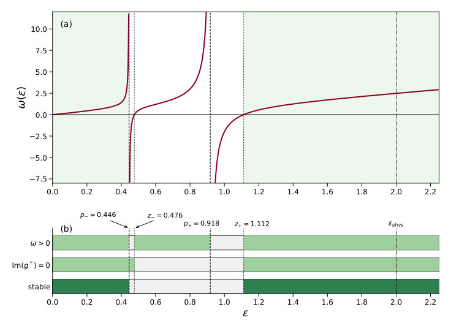
<figcaption class="paper-figure-caption"><b>Fig 1.</b> Figure 1. Correction exponent ω(ε) and the corresponding stability and reality domains of the RG fixed point. The upper panel shows the conjectured closed-form expression for ω(ε) from Eq. (13). The lower panel shows the intervals where ω &gt; 0, where the fixed point is real, Im(g∗) = 0, and where both conditions are simultaneously satisfied. Vertical lines indicate the corresponding domain boundaries and the physical value εphys = 2.</figcaption>
</figure>
</div>

<p><strong>Summary.</strong> This theoretical paper investigates the renormalization group flow of stochastic turbulence to determine if perturbative results can be reliably extrapolated to physical conditions. By calculating the exponent $\omega$ to high loop orders, the authors find evidence suggesting that the fixed point governing the system loses its real stability before reaching the physical forcing strength, implying a fundamental breakdown of the simple perturbative RG description.</p>
<p><strong>Why it may be interesting.</strong> While focused on classical fluid dynamics, the methodology—using advanced RG techniques to probe the breakdown of perturbative expansions—is highly relevant to understanding non-equilibrium critical phenomena in quantum many-body systems.</p>
<details>
<summary>Detailed structure</summary>
<p><strong>Main problem.</strong> The paper investigates whether the perturbative Renormalization Group (RG) description of stochastic turbulence can be smoothly extended from small forcing parameters ($\epsilon \approx 0$) to the physically relevant large-scale forcing ($\epsilon_{	ext{phys}} = 2$).</p>
<p><strong>Main result.</strong> The analysis suggests that the RG fixed point loses its reality or stability in an intermediate range of $\epsilon$, indicating a possible obstruction to a simple, controlled perturbative extrapolation to the physical regime.</p>
<p><strong>Method.</strong> The authors employed advanced RG techniques, calculating the correction-to-scaling exponent $\omega$ up to five-loop order in the large-$d$ limit, and using pattern recognition (OEIS) to conjecture a closed-form expression for $\omega(\epsilon)$.</p>
<p><strong>Model / system.</strong> The system modeled is homogeneous isotropic stochastic turbulence, governed by the Navier-Stokes equation driven by a Gaussian random force. The analysis is performed in the large spatial dimension limit ($d 	o \infty$).</p>
<p><strong>Key observables.</strong> The correction-to-scaling exponent $\omega(\epsilon)$, the stability and reality domains of the RG fixed point, and the renormalized parameters ($
u_Z, g_0, Z_g, D_0$).</p>
<p><strong>Important parameters / regimes.</strong> The forcing parameter $\epsilon$, which varies from the perturbative limit ($\epsilon 	o 0$) to the physical limit ($\epsilon_{	ext{phys}} = 2$). The large dimension limit ($d 	o \infty$) is crucial for the calculations.</p>
<p><strong>Assumptions / limitations.</strong> The primary assumptions include performing calculations in the large-$d$ limit and treating the derived closed-form expression for $\omega(\epsilon)$ as a conjecture based on observed coefficient patterns.</p>
<p><strong>Figures summary.</strong> Figure 1 is noted to show the conjectured closed-form expression for $\omega(\epsilon)$ and plots the stability and reality domains of the RG fixed point, highlighting the physical value $\epsilon_{	ext{phys}} = 2$.</p>
<p><strong>Paper structure.</strong> The paper progresses by setting up the stochastic turbulence model via field theory, performing multi-loop calculations of the RG flow equations (determining $\omega$), conjecturing a closed form for $\omega(\epsilon)$, and finally analyzing the stability and reality of the resulting fixed point solution across the parameter space $\epsilon \in [0, 2]$.</p>
</details>
<details>
<summary>Abstract</summary>
<p>We examine whether the perturbative renormalization group (RG) regime of stochastic turbulence can be continued from small $\varepsilon$ to the physical value $\varepsilon_{\mathrm{phys}}=2$, corresponding to large-scale forcing. Exploiting the simplifications of the large-$d$ limit, we calculate the correction exponent $ω$ to five-loop order and find a simple structure suggesting a closed analytic form. This form implies that the fixed point stable near $\varepsilon=0$ ceases to be simultaneously real and infrared stable before reaching $\varepsilon_{\mathrm{phys}}=2$, pointing to a possible change of infrared regime rather than a controlled perturbative RG extrapolation.</p>
</details>
<p><sub><a href="#top">↑ back to top</a></sub></p>

<p><a id="paper-2610.00740"></a></p>
<h3 id="negative-quasiprobabilities-redistribute-and-complex-ones-reduce-the-information-in-unabsorbed-photons"><a href="http://arxiv.org/abs/2610.00740v1">Negative quasiprobabilities redistribute (and complex ones reduce) the information in unabsorbed photons</a></h3>
<p><strong>Authors:</strong> Jonte R. Hance<br>
<strong>Type:</strong> theory · <strong>Category:</strong> other · <strong>PDF:</strong> <a href="https://arxiv.org/pdf/2610.00740v1">https://arxiv.org/pdf/2610.00740v1</a><br>
<strong>Analysis basis:</strong> full PDF text, analyzed in chunks
<strong>Topic relevance:</strong> <code>interference shaping light</code> <strong>3/5</strong> · <code>quantum measurements</code> <strong>3/5</strong> · <code>Keldysh / 2PI / non-Gaussian methods</code> <strong>1/5</strong> · <code>correlated / nonlocal dissipation</code> <strong>1/5</strong> · <code>methods for driven-dissipative</code> <strong>1/5</strong></p>
<div class="figure-strip-hint">↔ Scroll figures horizontally</div>
<div class="paper-figures-scroll">
<figure class="paper-figure-card">
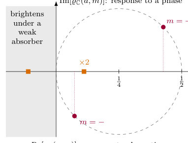
<figcaption class="paper-figure-caption"><b>Fig 1.</b> FIG. 2. The KD term ϱC(a, m) = ⟨m|a⟩⟨a| ˆρ |m⟩as the linear response of output m to a weak object in path a, Eq. (9). Its real part is the response to absorption, and a negative real part (shaded) marks an output that brightens under a weak absorber; its imaginary part is the response to a phase. Over all outputs the real parts sum to P(a) and the imaginary parts sum to zero, Eq. (5). Circles: the two outputs of Fig. 3(a)’s two-path interferometer, with input (|b⟩+eiφ |a⟩)/ √</figcaption>
</figure>
<figure class="paper-figure-card">
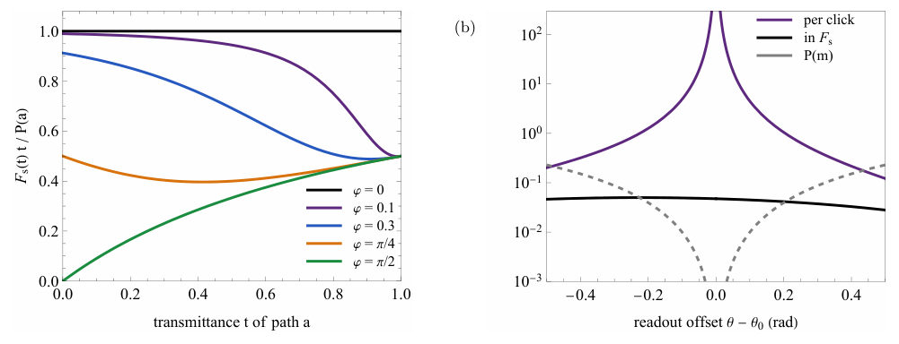
<figcaption class="paper-figure-caption"><b>Fig 2.</b> FIG. 3. (a) Fisher information from the unabsorbed photons, in units of the bound P(a)/t, against the transmittance t, for a two-path interferometer with input (|b⟩+ eiφ |a⟩)/ √</figcaption>
</figure>
<figure class="paper-figure-card">
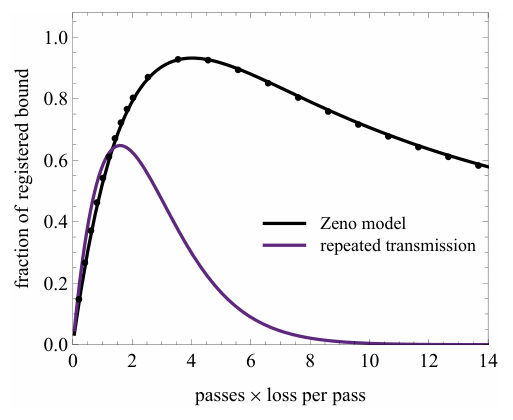
<figcaption class="paper-figure-caption"><b>Fig 3.</b> FIG. 4. Many passes with unregistered loss: Fisher informa- tion per absorbed photon delivered by the detected photons, as a fraction of the registered bound 1/[t(1 −t)2], against the number of passes times the intensity loss per pass, in the limit t →1. Black: Section IV B’s Zeno model, Appendix E’s G(ν) plotted against 2ν = 2n(1− √</figcaption>
</figure>
<figure class="paper-figure-card">
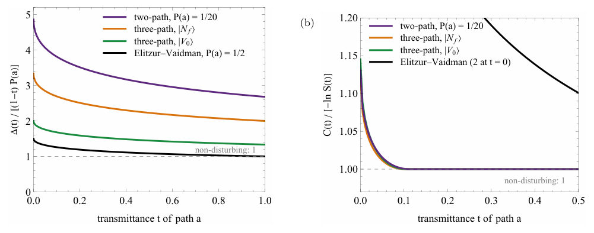
<figcaption class="paper-figure-caption"><b>Fig 4.</b> FIG. 5. Discrimination between object present (transmittance t) and absent, per absorbed photon, for four interferometers: two paths with P(a) = 1/20 and balanced readout (purple), the three-path interferometer with inputs |Nf⟩(orange) [16, 35] and |V0⟩(green) [35], and the balanced Elitzur–Vaidman interferometer (black). (a) Single-shot statistical distance R(t), Eq. (26), over t ∈[0, 1]; the t →1 limits are 1+N/P(a), with N the negativity of the KD distribution. (b) Error exponent of a repeated test, the Chernoff information C(t), relative to its value −ln S(t), where S(t) is the survival probability, for any non-disturbing definite-path scheme with the same absorption, over t ∈[0, 0.5]...</figcaption>
</figure>
<figure class="paper-figure-card">
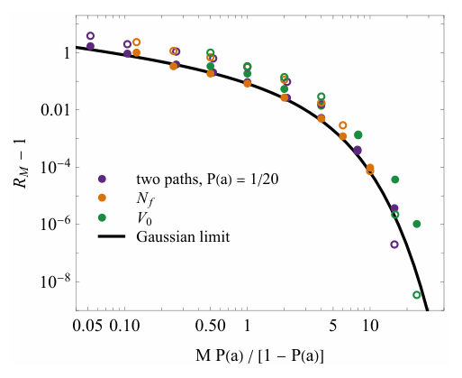
<figcaption class="paper-figure-caption"><b>Fig 5.</b> FIG. 6. Decay of the single-shot gain with the number M of heralded trials: RM −1 against x2 = MP(a)/[1 −P(a)] for the three interferometers of Fig. 5 that have negative KD terms, from sums over all click records at t = 0.99 (filled) and t = 0 (open), and the limit Eq. (G2) of a weak absorber and small P(a) (black).</figcaption>
</figure>
</div>

<p><strong>Summary.</strong> This theoretical paper analyzes the information content gained from measuring a weak absorber using single photons in an interferometer. It demonstrates that while negative quasiprobabilities are theoretically significant, they do not improve the information per absorbed photon in a single pass. True advantages are found either through phase accumulation over multiple passes or when the measurement setup is designed to exploit specific interference effects.</p>
<p><strong>Why it may be interesting.</strong> This work provides rigorous theoretical bounds on quantum metrology, specifically quantifying when and how negative quasiprobabilities can enhance measurement sensitivity beyond classical limits in the context of photon loss.</p>
<details>
<summary>Detailed structure</summary>
<p><strong>Main problem.</strong> The paper investigates the fundamental limits on the information gain per absorbed photon when performing interaction-free measurements on a weak sample.</p>
<p><strong>Main result.</strong> For single-pass measurements, negativity does not improve the total information per absorbed photon; advantage only accumulates over multiple, uncounted passes or when the phase response is significant.</p>
<p><strong>Method.</strong> The analysis uses the Fisher information derived from the linear response of output probabilities to weak absorption or phase shifts, utilizing negative Kirkwood-Dirac quasiprobabilities.</p>
<p><strong>Model / system.</strong> The system models a single photon passing through a $d$-path interferometer containing a weak absorber with transmittance $t$. The analysis extends to multi-pass scenarios using ring resonators.</p>
<p><strong>Key observables.</strong> Fisher information ($F_s(t)$), evidence per absorbed photon ($\eta$), and the complex Kirkwood-Dirac quasiprobabilities ($\varrho_C$).</p>
<p><strong>Important parameters / regimes.</strong> Transmittance $t$, number of passes $\ell$, and the weak value $\langle\hat{\Pi}(a)
angle_w$.</p>
<p><strong>Assumptions / limitations.</strong> The analysis often relies on approximations, such as the Gaussian regime or small probabilities of absorption ($P(a)$).</p>
<p><strong>Figures summary.</strong> Figures illustrate the interferometer setup, showing how the single-shot gain ($R_M^{-1}$) decays for different measurement limits and how the gain is enhanced by negative weak values near null ports.</p>
<p><strong>Paper structure.</strong> The paper progresses from establishing the single-pass bound using Fisher information (Theorem 1) to analyzing the role of negativity, and finally extends the analysis to multi-pass systems and the evidence gain ($\eta$) using advanced entropy measures.</p>
</details>
<details>
<summary>Abstract</summary>
<p>Negative Kirkwood--Dirac quasiprobabilities are credited with the quantum advantage of interaction-free measurement and postselected metrology. We test that claim on the task interaction-free measurement was designed for: learning about a sample letting it absorb as little light as possible. The Kirkwood--Dirac distribution of path and output gives the linear response to a weak sample: its real part responds to absorption, its imaginary part to a phase. For a pure single photon passing once through any interferometer, the Fisher information about transmittance per absorbed photon is the direct-transmission value minus a sum of squared imaginary parts: no interferometer or readout beats direct transmission. Negativity plays no role beyond concentrating information in weakly lit outputs. The imaginary parts of the Kirkwood-Dirac distribution depend on the output basis here, not on the sample, so a basis exists in which every term is real, which is optimal. A single photon gains information per absorbed photon only through a phase response, which for an optical line needs a thick or inhomogeneously broadened sample, or through many passes when absorptions go uncounted, as shown by a critically coupled resonator. For detecting a weak absorber, negativity gives a single-shot advantage that does not accumulate over multiple trials; advantage instead accumulates when there are outputs which are dark without the object, a case which needs no negativity.</p>
</details>
<p><sub><a href="#top">↑ back to top</a></sub></p>

<p><a id="paper-2610.01402"></a></p>
<h3 id="transport-theory-for-a-generic-two-arm-co-propagating-majorana-interferometer-with-majorana-fermion-and-edge-vortex-tunneling"><a href="http://arxiv.org/abs/2610.01402v1">Transport theory for a generic two-arm co-propagating Majorana interferometer with Majorana fermion and edge vortex tunneling</a></h3>
<p><strong>Authors:</strong> Domenico Giuliano, Andrea Nava, Fabian Hassler, Reinhold Egger<br>
<strong>Type:</strong> theory · <strong>Category:</strong> other · <strong>PDF:</strong> <a href="https://arxiv.org/pdf/2610.01402v1">https://arxiv.org/pdf/2610.01402v1</a><br>
<strong>Analysis basis:</strong> full PDF text, analyzed in chunks
<strong>Topic relevance:</strong> <code>Keldysh / 2PI / non-Gaussian methods</code> <strong>3/5</strong> · <code>methods for driven-dissipative</code> <strong>2/5</strong> · <code>analog quantum simulation</code> <strong>1/5</strong> · <code>correlated / nonlocal dissipation</code> <strong>1/5</strong> · <code>driven-dissipative phase transition</code> <strong>1/5</strong> · <code>interference shaping light</code> <strong>1/5</strong></p>
<div class="figure-strip-hint">↔ Scroll figures horizontally</div>
<div class="paper-figures-scroll">
<figure class="paper-figure-card">
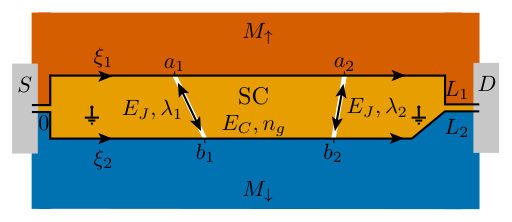
<figcaption class="paper-figure-caption"><b>Fig 1.</b> FIG. 1. Schematic setup for an asymmetric chiral Majorana interferometer formed on the surface of a TI. In the interfer- ometer region, the surface is proximitized by a conventional SC. Outer regions are proximitized by magnetic materials of opposite magnetization (M↑and M↓). At interfaces between magnetic materials, 1D chiral Dirac fermion channels (double lines) arise. Arrows denote the propagation direction. At in- terfaces between SCs and magnets, we have a pair of chiral 1D Majorana fermion modes ξ1,2(x) (black lines) with different length, 0 &lt; x &lt; L1,2. These modes are populated from the 1D Dirac channel emanating from the normal source electrode S. Similarly, outgoing particles are...</figcaption>
</figure>
<figure class="paper-figure-card">
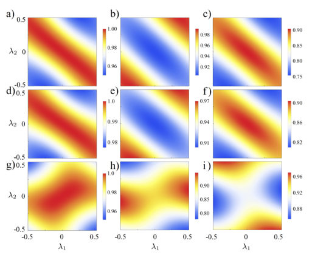
<figcaption class="paper-figure-caption"><b>Fig 2.</b> FIG. 2. 2D color-scale plots for the finite-temperature DC conductance G in units of G0 = e2/h at vanishing volt- age (V →0) in the (λ1, λ2)–plane for different asymmet- ric device configurations. The shown results are obtained from Eq. (7) and hold in the absence of EV tunneling. The interferometer arm lengths were chosen L1 = 0.5v/T and L2 = L1/2 for δL &gt; 0, and swapped for δL &lt; 0. The tun- neling locations {a1, b1, a2, b2} are permutations of the values {0.035, 0.08, 0.11, 0.175} v/T. Different panels correspond to either δL = 0 [panels (a),(d), and (g)], δL &lt; 0 [panels (b),(e), and (h)], or δL &gt; 0 [panels (c),(f), and (i)]. The tunneling points are ordered as a1 &lt; a2 &lt; b1 &lt; b2 in panels...</figcaption>
</figure>
<figure class="paper-figure-card">
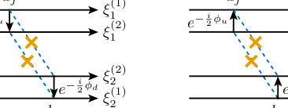
<figcaption class="paper-figure-caption"><b>Fig 3.</b> FIG. 3. EV tunneling processes within the doubled theory, where we show the Majorana fields ξ(a) j (x) with replica in- dex a = 1, 2. The tunneling points are located at x = aj on the upper edge (j = 1), and at x = bj on the lower edge (j = 2). Bosonization implements vortex tunneling (black arrows) within a single edge while coupling the two replicas. For independent isospin operators Su,d, all four processes are allowed in Eq. (26). However, not all of these correspond to physical processes within a single replica sector. While the pair of Hermitian-conjugate processes shown in the top row corresponds to physical vortex tunneling (blue dashed ar- rows), the bottom row does not represent...</figcaption>
</figure>
<figure class="paper-figure-card">
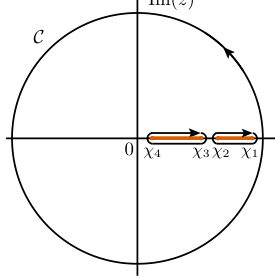
<figcaption class="paper-figure-caption"><b>Fig 4.</b> FIG. 4. Complex integration contour C and branch cuts for the evaluation of the complex integral in Eq. (31). On the positive real axis, two branch cuts with Im(z) = 0 and χ4 &lt; Re(z) &lt; χ3 and χ2 &lt; Re(z) &lt; χ1 exist, see Eq. (32). The positions of the branch points χj correspond (via the mapping x 7→exp(−2πTx/v)) to the location of the EVs (all four EVs are evaluated at teh same imaginary time). The branch cuts reflect the Ising anyon nature of the EV. In the symmetric case aj = bj, the branch cuts disappear and a bosonization within a single replica sector becomes possible.</figcaption>
</figure>
<figure class="paper-figure-card">
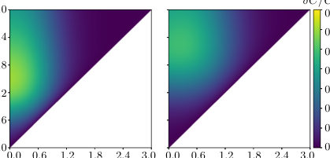
<figcaption class="paper-figure-caption"><b>Fig 5.</b> FIG. 5. 2D color-scale plot of the amplitude δC of the effec- tive capacitance Ceff [in units of C0 = Γe2(lcT/v)1/4/T 2] as a function of the edge-vortex positions b1 and b2 in the bottom edge mode, using a1 = 0.5 v/T and a2 = v/T. The interfer- ometer arm lengths are set to L1 = L2 = 3v/T (left panel) and L1 = 3v/T, L2 = 4v/T (right panel). Note that Ceff os- cillates as a function of the offset angle α as cos(πSz/4 + α). The phase offset πSz/4 = ±2πsσ corresponds to the topolog- ical spin of EVs [25].</figcaption>
</figure>
</div>

<p><strong>Summary.</strong> This work develops a transport theory for a Majorana interferometer incorporating edge vortex tunneling. It finds that while DC conductance is insensitive to topological effects, the low-frequency response reveals an effective capacitance sensitive to the non-Abelian statistics of the edge vortices. This provides a measurable diagnostic for topological physics in superconducting quantum devices.</p>
<p><strong>Why it may be interesting.</strong> The focus on topological signatures (non-Abelian statistics) measurable via capacitance in a superconducting platform makes it highly relevant for understanding topological quantum computation pathways.</p>
<details>
<summary>Detailed structure</summary>
<p><strong>Main problem.</strong> To develop a transport theory for a generic two-arm co-propagating Majorana interferometer that incorporates both Majorana fermion tunneling and the effects of edge vortex (EV) tunneling.</p>
<p><strong>Main result.</strong> While the DC conductance does not show signatures of edge-vortex interference, the interference manifests as an effective capacitance at low frequencies, which is sensitive to the non-Abelian anyon statistics of the edge vortices.</p>
<p><strong>Method.</strong> The theory employs a replicated bosonization field theory framework to analyze the linear-response conductance tensor, generalizing previous treatments to asymmetric configurations.</p>
<p><strong>Model / system.</strong> The system is a Majorana interferometer realized on a Topological Insulator proximitized by a Superconductor, featuring two co-propagating chiral Majorana edge modes and coupling points for both Majorana fermions and EVs.</p>
<p><strong>Key observables.</strong> Effective capacitance ($C_{	ext{eff}}$) at low frequencies, and the frequency-dependent conductance tensor $G(\omega)$.</p>
<p><strong>Important parameters / regimes.</strong> Thermal length $\ell_T = \hbar v / (\pi k_B T)$, and the degree of asymmetry in the interferometer arms ($\delta L$).</p>
<p><strong>Assumptions / limitations.</strong> The analysis assumes the EV size is negligible compared to the thermal length $\ell_T$, and the theory is generalized to handle arbitrary length mismatches.</p>
<p><strong>Figures summary.</strong> Figures illustrate the schematic setup of the interferometer, showing the two chiral Majorana modes and tunneling processes involving EVs, and show color-scale plots of the finite-temperature DC conductance dependence on tunneling amplitudes.</p>
<p><strong>Paper structure.</strong> The paper builds from the initial Hamiltonian formulation (including Majorana and EV tunneling) to the application of a replicated bosonization framework to calculate the frequency-dependent conductance, distinguishing between DC and AC responses.</p>
</details>
<details>
<summary>Abstract</summary>
<p>Co-propagating chiral Majorana edge modes are predicted to exist in proximity-coupled quantum anomalous Hall systems. They combine the exciting prospects of edge vortices as flying non-Abelian Ising anyons, with their fully electrical detection through anyon fusion processes. In this setup, electrical transport arises from the interference of a pair of Majorana edge states. By bosonizing the model with an additional replica sector, we generalize previous treatments to fully asymmetric configurations. We analyze a Mach-Zehnder interferometer and show that while the DC conductance does not exhibit signatures of edge-vortex interference, at low frequencies, this interference manifests as an effective capacitance. This quantity is sensitive to the non-Abelian anyon statistics of edge vortices and, in particular, carries signatures of their topological spin and nontrivial conformal dimension. We demonstrate that the thermal length $l_T = \hbar v/(πk_B T)$ is the relevant scale at low temperatures $T$, analogous to quasiparticle transport in conventional quantum Hall edge states with velocity $v$. As long as the interferometer arm lengths match within this length scale, transport signatures of the non-Abelian statistics of edge vortices remain visible.</p>
</details>
<p><sub><a href="#top">↑ back to top</a></sub></p>

<p><a id="paper-2610.01183"></a></p>
<h3 id="additive-solid-immersion-lenses-for-enhanced-collection-efficiency-of-shallow-nv-centers-by-pulsed-laser-deposition-and-structurization-of-high-k-amorphous-oxides"><a href="http://arxiv.org/abs/2610.01183v1">Additive solid immersion lenses for enhanced collection efficiency of shallow NV centers by pulsed laser deposition and structurization of high-k amorphous oxides</a></h3>
<p><strong>Authors:</strong> Michael S. Bar, Nicole Raatz, Max Kneiss, Andreas Koenig, Marius Grundmann, Holger von Wenckstern<br>
<strong>Type:</strong> both · <strong>Category:</strong> other · <strong>PDF:</strong> <a href="https://arxiv.org/pdf/2610.01183v1">https://arxiv.org/pdf/2610.01183v1</a><br>
<strong>Analysis basis:</strong> full PDF text, analyzed in chunks
<strong>Topic relevance:</strong> <code>interference shaping light</code> <strong>3/5</strong> · <code>quantum optics experiment</code> <strong>3/5</strong> · <code>QC/QI experiment</code> <strong>1/5</strong> · <code>methods for driven-dissipative</code> <strong>1/5</strong></p>
<div class="figure-strip-hint">↔ Scroll figures horizontally</div>
<div class="paper-figures-scroll">
<figure class="paper-figure-card">
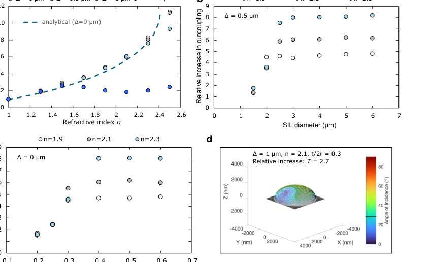
<figcaption class="paper-figure-caption"><b>Fig 1.</b> FIG. 1. a) Increase in light outcoupling from a solid medium as a function of the refractive index of a hemispherical SIL with a diameter of 2r = 5µm. The numerical solutions (circles) are calculated for different lateral offsets ∆of the point source from the center of the SIL. b) Numerical solution for the light extraction enhancement for a hemispherical SIL with constant offset ∆= 0.5µm and as a function of total SIL size. c) Numerical solution for the light extraction enhancement as a function of aspect ratio height/diameter. d) An example simulation for a flattened misplaced SIL, still resulting in a twofold increase in outcoupling. The points on the surface show the intersection of...</figcaption>
</figure>
<figure class="paper-figure-card">
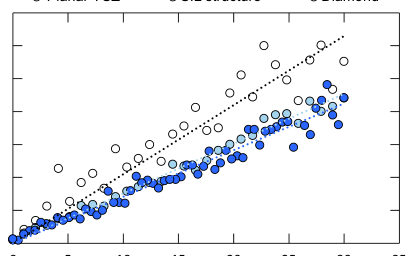
<figcaption class="paper-figure-caption"><b>Fig 2.</b> FIG. 2. Luminesence of the deposited YSZ layer as a function of excitation power with an electronic grade diamond as reference. The dashed line represents a linear fit.</figcaption>
</figure>
<figure class="paper-figure-card">
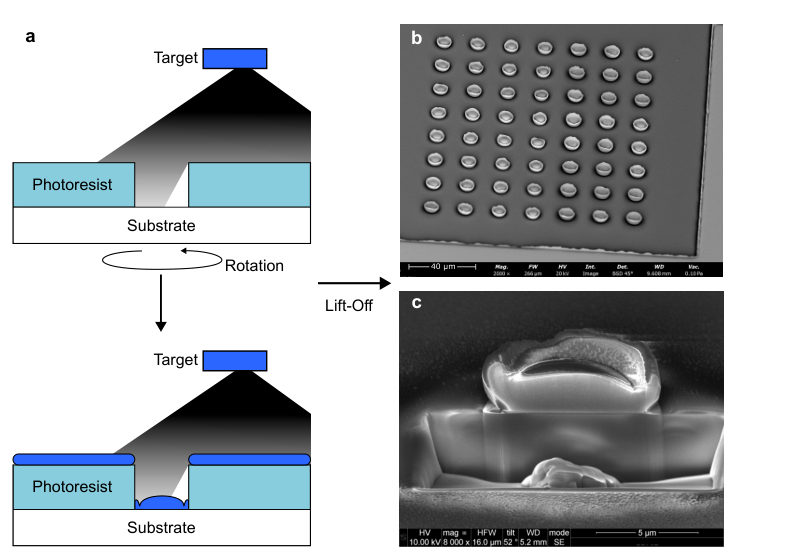
<figcaption class="paper-figure-caption"><b>Fig 3.</b> FIG. 3. a) Schematic illustration of the deposition process of AD-SILs. b) Array of YSZ AD-SIL fabricated simultaneously with PLD on glass. c) Cross-section of a YSZ AD-SIL on glass with “fencing”.</figcaption>
</figure>
<figure class="paper-figure-card">
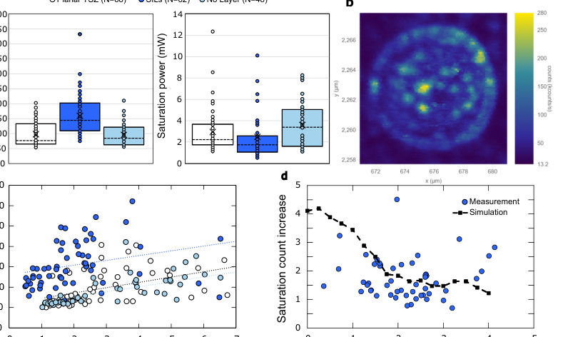
<figcaption class="paper-figure-caption"><b>Fig 4.</b> FIG. 4. a) Statistical evaluation of the saturation intensity and saturation power of NV centers under planar YSZ, AD-SILs and bare diamond surface. The circles denote individual measurements, the box the first and third quartile and the dashed line and cross the median and average respectively. b) Example confocal scan of an AD-SIL on diamond with visible NV center luminescence. c) Saturation counts as a function of respective power for the respective surface modification types. The dashed lines are linear fits meant as a guide to the eye. d) Measured and simulated saturation count increase of NV centers under AD-SILs compared to the average uncovered NV center.</figcaption>
</figure>
</div>

<p><strong>Summary.</strong> This paper reports on the use of Additive Solid Immersion Lenses (SILs), fabricated via Pulsed Laser Deposition of high-k oxides like YSZ, to boost the light collection efficiency from NV centers in diamond. By mitigating total internal reflection losses, the technique significantly increases the measurable saturation intensity of the quantum emitter, making it a viable platform for quantum information processing.</p>
<p><strong>Why it may be interesting.</strong> This work directly addresses the practical quantum optics challenge of coupling single-photon emitters to external optical circuits by engineering the local photonic environment, which is crucial for quantum networking and quantum memory.</p>
<details>
<summary>Detailed structure</summary>
<p><strong>Main problem.</strong> The primary challenge is the low photon extraction efficiency from shallow Nitrogen-Vacancy (NV−) centers in diamond due to total internal reflection losses caused by the refractive index mismatch with air.</p>
<p><strong>Main result.</strong> The authors successfully demonstrated that using Additive Solid Immersion Lenses (SILs) made of high-k amorphous oxides significantly enhances light collection, achieving an average 63% increase in saturation intensity.</p>
<p><strong>Method.</strong> The study combines numerical simulations (Monte-Carlo) to model photon extraction with experimental fabrication techniques like Pulsed Laser Deposition (PLD) and photolithography to create the SIL structures.</p>
<p><strong>Model / system.</strong> The physical system is NV− centers embedded in diamond. The enhancement mechanism involves depositing high-k dielectric materials, such as Yttria-Stabilized Zirconia (YSZ), onto the surface to act as an immersion lens.</p>
<p><strong>Key observables.</strong> Photon extraction efficiency ($\eta$), saturation intensity ($I_{sat}$), and the necessary laser intensity for saturation.</p>
<p><strong>Important parameters / regimes.</strong> The refractive index ($n$) of the SIL material, the lateral offset ($\Delta$) of the light source, and the SIL geometry parameters (diameter $2r$, thickness $t$).</p>
<p><strong>Assumptions / limitations.</strong> Initial simulations did not consider Fresnel reflections, and the performance is sensitive to fabrication imperfections like sidewall deposition ('fencing').</p>
<p><strong>Figures summary.</strong> Figures illustrate the fabrication process, showing the array of curved SILs and cross-sections, and compare fluorescence measurements (saturation counts) under different surface conditions.</p>
<p><strong>Paper structure.</strong> The paper progresses from identifying the optical loss problem to simulating the theoretical enhancement using SILs, and finally validating the concept through the scalable, bottom-up fabrication and measurement of the enhanced photon collection efficiency.</p>
</details>
<details>
<summary>Abstract</summary>
<p>The negatively charged nitrogen-vacancy ($\mathrm{NV}^-$) defect in diamond can be used for quantum information processing via the readout of the radiative decay of the excited state into the ground state. The large refractive index mismatch of diamond and air causes low photon extraction efficiency due to total internal reflection losses. Here, we investigate the photon extraction numerically and report additive solid immersion lenses (SILs) consisting of the high-k dielectric yttria-stabilized-zirconia (YSZ) for surface modification and enhanced light extraction of shallow implanted nitrogen-vacancy centers. We demonstrate an average increase of 63% in saturation intensity using a scalable bottum up room temperature pulsed laser deposition and photolithography structurization process. The average necessary laser intensity for saturation is reduced by 33% by the SILs.</p>
</details>
<p><sub><a href="#top">↑ back to top</a></sub></p>

<p><a id="paper-2610.01669"></a></p>
<h3 id="dissipation-enabled-operator-norm-locality-bounds-for-bose-hubbard-hamiltonians"><a href="http://arxiv.org/abs/2610.01669v1">Dissipation-Enabled Operator-Norm Locality Bounds for Bose-Hubbard Hamiltonians</a></h3>
<p><strong>Authors:</strong> Marius Lemm, Tim Möbus<br>
<strong>Type:</strong> theory · <strong>Category:</strong> quantum information and computing · <strong>PDF:</strong> <a href="https://arxiv.org/pdf/2610.01669v1">https://arxiv.org/pdf/2610.01669v1</a><br>
<strong>Analysis basis:</strong> full PDF text, analyzed in chunks
<strong>Topic relevance:</strong> <code>analog quantum simulation</code> <strong>3/5</strong> · <code>methods for driven-dissipative</code> <strong>3/5</strong> · <code>correlated / nonlocal dissipation</code> <strong>1/5</strong> · <code>driven-dissipative phase transition</code> <strong>1/5</strong></p>
<div class="figure-strip-hint">↔ Scroll figures horizontally</div>
<div class="paper-figures-scroll">
<figure class="paper-figure-card">
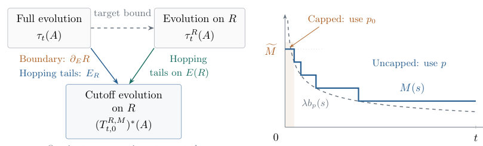
<figcaption class="paper-figure-caption"><b>Fig 1.</b> Figure 1: The adaptive locality proof. (a) Comparing both physical evolutions with the same cutoff evolution on R gives hopping tails controlled by moments and boundary terms controlled by a Lieb–Robinson bound. (b) Schematic cutoff M(s) = min{f M, ⌈λbp(s)⌉}. The capped interval uses 2 &lt; p0 &lt; 2(ℓ−1), and the remainder uses p &gt; 2. For ℓ&gt; 2, the integrated cutoff is bounded uniformly in f M.</figcaption>
</figure>
<figure class="paper-figure-card">
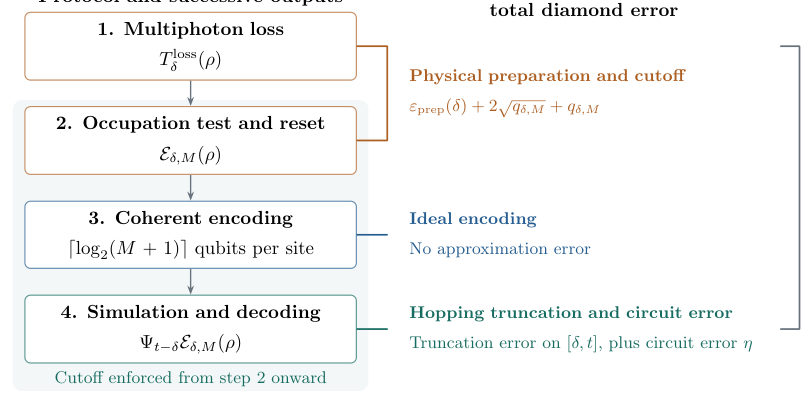
<figcaption class="paper-figure-caption"><b>Fig 2.</b> Figure 2: Hybrid bosonic–qubit simulation at time t. The four steps implement Ψt−δEδ,M. The right column summarizes the error contributions in Equation (36), whose sum bounds the diamond distance from Tt. Ideal encoding adds no error. Shading marks the stages after the occupation cutoff is enforced.</figcaption>
</figure>
</div>

<p><strong>Summary.</strong> This paper demonstrates that adding local dissipation to the Bose-Hubbard model restores a robust, state-independent Lieb-Robinson bound, overcoming a major hurdle in analyzing bosonic quantum dynamics. By regularizing the state via photon loss, the authors prove that local approximations are valid uniformly in the initial state. This has significant implications for digital quantum simulation and quantum error correction codes.</p>
<p><strong>Why it may be interesting.</strong> This work provides a crucial theoretical tool—state-independent locality bounds—for bosonic systems, which is highly valuable for analyzing quantum simulation protocols and understanding information flow in complex quantum hardware.</p>
<details>
<summary>Detailed structure</summary>
<p><strong>Main problem.</strong> The paper addresses the challenge of establishing operator-norm Lieb-Robinson bounds for bosonic lattice systems, which is difficult because information propagation velocity can depend on the local boson occupancy.</p>
<p><strong>Main result.</strong> The authors prove that introducing local dissipation (on-site $\ell$-photon loss with $\ell>2$) restores an almost-ballistic Lieb-Robinson bound, allowing for uniform state-independent approximations.</p>
<p><strong>Method.</strong> The core method involves using local dissipation to regularize the dynamics, allowing the use of Sobolev regularization techniques to bound the difference between the full and truncated evolution.</p>
<p><strong>Model / system.</strong> The system is the Bose-Hubbard model on a lattice, described by a Lindbladian master equation incorporating on-site $\ell$-photon loss. Extensions cover cat-code dissipation and quartic bosonic models.</p>
<p><strong>Key observables.</strong> Operator-norm local approximation estimates, Lieb-Robinson bounds, and the decay rate of the difference between full and restricted evolution.</p>
<p><strong>Important parameters / regimes.</strong> The dissipation order $\ell > 2$, the hopping coefficients $J_{ij}$, and the rates $\gamma_j$ are crucial parameters determining the bound's validity.</p>
<p><strong>Assumptions / limitations.</strong> The analysis relies on the existence of Sobolev-preserving and regularizing quantum Markov semigroups and the assumption of sufficiently strong local dissipation ($\ell>2$).</p>
<p><strong>Paper structure.</strong> The paper builds from establishing the general difficulty of locality bounds in bosonic systems to introducing dissipation as a regularizing mechanism. It then proves the main Lieb-Robinson bound for the Bose-Hubbard model, extends this to cat-code dissipation, and concludes with applications like local adiabatic approximations.</p>
</details>
<details>
<summary>Abstract</summary>
<p>Closed bosonic lattice systems do not generally admit operator norm Lieb--Robinson bounds uniformly in the initial state. The reason is that the information propagation velocity can grow with the local boson occupancy, which can be macroscopically large. Here, we show that local dissipation restores an operator-norm Lieb--Robinson bound. We consider the dissipative Bose--Hubbard model described by a Lindbladian operator with on-site $\ell$-photon loss, $\ell>2$ and, for our main result, we establish an almost-ballistic Lieb-Robinson bound. Dissipation rapidly depletes highly occupied sites, thus regularizing the state on the Sobolev-type scale of local particle moments. The resulting moment bounds diverge as time approaches zero but remain integrable near zero at sufficiently low orders. We extend these ideas to treat cat-code dissipation and, for initial states in the code space, we prove a local adiabatic approximation uniform in the total volume. Further consequences include local channel approximation, a thermodynamic limit, and efficient digital quantum simulation. The point is that these applications are now available \textit{uniformly in the input state}, as for quantum spin systems, but in contrast to closed Bose--Hubbard systems.</p>
</details>
<p><sub><a href="#top">↑ back to top</a></sub></p>

<p><a id="paper-2610.01790"></a></p>
<h3 id="dssyk-open-aseptasep-and-2d-dilaton-gravity-at-strong-coupling"><a href="http://arxiv.org/abs/2610.01790v1">DSSYK, open ASEP/TASEP and 2d dilaton gravity at strong coupling</a></h3>
<p><strong>Authors:</strong> Alexander Gorsky, Elizaveta Kovalenko, Sergei Nechaev<br>
<strong>Type:</strong> theory · <strong>Category:</strong> statistical mechanics · <strong>PDF:</strong> <a href="https://arxiv.org/pdf/2610.01790v1">https://arxiv.org/pdf/2610.01790v1</a><br>
<strong>Analysis basis:</strong> full PDF text, analyzed in chunks
<strong>Topic relevance:</strong> <code>non-equilibrium universality</code> <strong>3/5</strong> · <code>Keldysh / 2PI / non-Gaussian methods</code> <strong>2/5</strong> · <code>methods for driven-dissipative</code> <strong>2/5</strong> · <code>driven-dissipative phase transition</code> <strong>1/5</strong></p>
<div class="figure-strip-hint">↔ Scroll figures horizontally</div>
<div class="paper-figures-scroll">
<figure class="paper-figure-card">
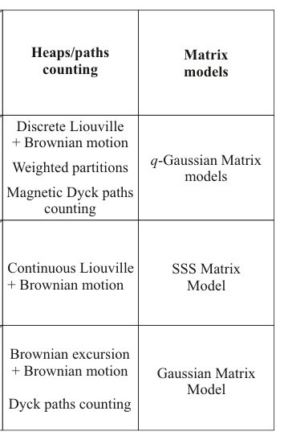
<figcaption class="paper-figure-caption"><b>Fig 1.</b> Figure 1. Schematic connection between different models discussed in the paper.</figcaption>
</figure>
<figure class="paper-figure-card">
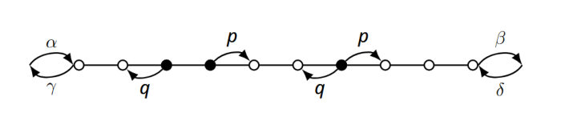
<figcaption class="paper-figure-caption"><b>Fig 2.</b> Figure 2. ASEP on a 1D lattice with open boundaries. Black dots denote occupied sites, empty circles correspond to holes; bulk hopping rates are p (to the right) and q (to the left); boundary rates are: injection/removal α, γ (left) and δ, β (right).</figcaption>
</figure>
<figure class="paper-figure-card">
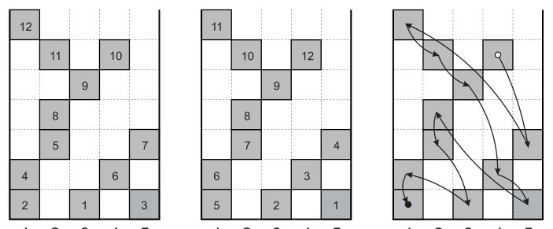
<figcaption class="paper-figure-caption"><b>Fig 3.</b> Figure 3. A particular heap. (a) Heap obtained by sequentially dropping bricks correspond- ing to the word Wa = g3g1g5g1g2g4g5g2g3g4g2g1; (b) same heap with a different sequence Wb = g5g3g4g5g1g1g2g2g3g2g1g4; (c) unique “Cartier-Foata ordering” of pieces.</figcaption>
</figure>
<figure class="paper-figure-card">
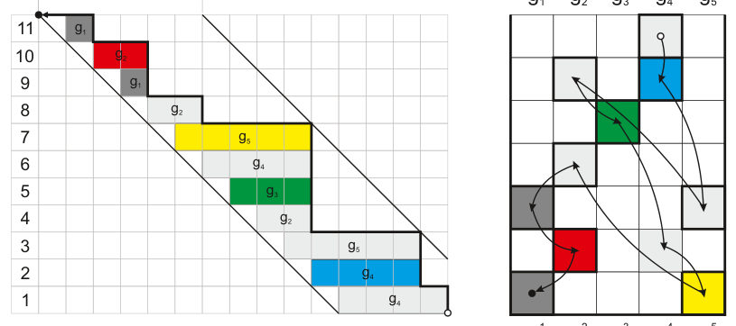
<figcaption class="paper-figure-caption"><b>Fig 4.</b> Figure 4. Left: Young tableau representation of a heap shown in the right panel; Right: particular configuration of a heap where arrows show Mikado enumeration.</figcaption>
</figure>
<figure class="paper-figure-card">
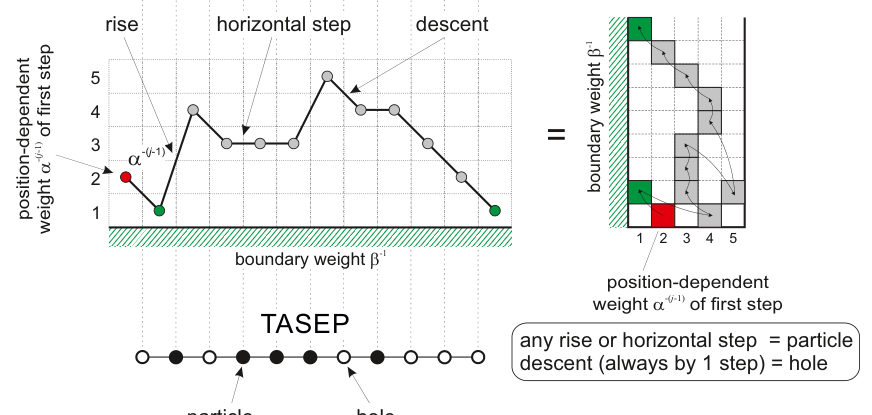
<figcaption class="paper-figure-caption"><b>Fig 5.</b> Figure 5. Example of two distinct Lukasiewicz paths (corresponding to two distinct pyra- mids) mapped to the single TASEP configuration. Particularly, the first step carries the weight α−(j+1) j=2 = α−1 and the steps 2 and 12 carry the boundary weight β−1.</figcaption>
</figure>
</div>

<p><strong>Summary.</strong> This paper explores a profound mathematical triality linking stochastic growth models like TASEP, the DSSYK quantum field theory, and low-dimensional dilaton gravity. By showing these systems are mathematically equivalent in certain limits, the authors provide a unified, powerful framework for studying strongly coupled quantum phenomena. This work is significant for bridging non-equilibrium statistical mechanics with quantum gravity.</p>
<p><strong>Why it may be interesting.</strong> The deep connections drawn between non-equilibrium statistical mechanics (ASEP/TASEP) and quantum gravity provide powerful, non-perturbative tools for understanding strongly coupled quantum systems, which is relevant for open quantum systems dynamics.</p>
<details>
<summary>Detailed structure</summary>
<p><strong>Main problem.</strong> The paper investigates the deep mathematical and physical connections, or 'triality,' between stochastic growth models, specific quantum field theories, and low-dimensional quantum gravity.</p>
<p><strong>Main result.</strong> It establishes that the TASEP model is equivalent to the strong-coupling limit of 2D dilaton gravity, unifying these disparate fields under a single theoretical framework.</p>
<p><strong>Method.</strong> The authors employ advanced techniques including deriving exact resolvent expressions, utilizing matrix integral representations, and establishing dualities between different physical models.</p>
<p><strong>Model / system.</strong> The core models include the Totally Asymmetric Simple Exclusion Process (TASEP), the DSSYK model, and 2D dilaton gravity (related to JT gravity). These are connected via the KPZ universality class.</p>
<p><strong>Key observables.</strong> Resolvent of the transfer matrix, cumulants, spectral densities, and partition functions.</p>
<p><strong>Important parameters / regimes.</strong> Deformation parameter $q$, strong-coupling limit, and the coupling constant $\lambda$ governing the gravitational theories.</p>
<p><strong>Assumptions / limitations.</strong> The analysis relies on identifying specific limits (e.g., strong coupling, $q 	o 0$) where the models simplify or become equivalent.</p>
<p><strong>Figures summary.</strong> A flow chart is mentioned that schematically summarizes the connection between DSSYK, ASEP, TASEP, KPZ, Gravity, and Matrix models.</p>
<p><strong>Paper structure.</strong> The paper progresses by first defining the scope of the triality, then detailing the mathematical connections (Hamiltonian/transfer matrix coincidence), deriving specific results (resolvent), and finally unifying the interpretation through random walks and dualities.</p>
</details>
<details>
<summary>Abstract</summary>
<p>We discuss the triality between stochastic growth models in the KPZ universality class, the DSSYK model, and low dimensional dilaton gravity. The TASEP model, which will be our primary focus, is identified with the strong-coupling limit of two-dimensional quantum gravity. The Hamiltonian of DSSYK and the transfer matrix of ASEP coincide up to an additive constant, and we derive the exact expression for the resolvent of the corresponding transfer matrix in ASEP on a finite interval. We also mention the relation of cumulants with the Tutte polynomial $T(1,q)$ of the crossing graph dual to the chord diagram, which implies the relationship of the models considered with the $Q=0$ Potts model coupled with gravity. We further exploit the realization of all these models in terms of different versions of discrete and continuous random walks on two-dimensional manifolds, which parameterize the Hilbert spaces of the respective theories. The representation of TASEP as the growth model of heaps provides new insight into strong-coupling gravity, suggesting its interpretation as an emerging phenomenon. The new dualities between ASEP and q-TASEP models and heap models providing a useful growth interpretation have been developed.</p>
</details>
<p><sub><a href="#top">↑ back to top</a></sub></p>

<p><a id="paper-2610.01209"></a></p>
<h3 id="fermionic-gaussian-scrooge-ensembles-in-deep-thermalization"><a href="http://arxiv.org/abs/2610.01209v1">Fermionic Gaussian Scrooge Ensembles in Deep Thermalization</a></h3>
<p><strong>Authors:</strong> Ning Sun, Pengfei Zhang<br>
<strong>Type:</strong> theory · <strong>Category:</strong> statistical mechanics · <strong>PDF:</strong> <a href="https://arxiv.org/pdf/2610.01209v1">https://arxiv.org/pdf/2610.01209v1</a><br>
<strong>Analysis basis:</strong> full PDF text, analyzed in chunks
<strong>Topic relevance:</strong> <code>quantum measurements</code> <strong>3/5</strong> · <code>Keldysh / 2PI / non-Gaussian methods</code> <strong>2/5</strong> · <code>analog quantum simulation</code> <strong>1/5</strong> · <code>non-equilibrium universality</code> <strong>1/5</strong> · <code>scars &amp; prethermalization</code> <strong>1/5</strong></p>
<div class="figure-strip-hint">↔ Scroll figures horizontally</div>
<div class="paper-figures-scroll">
<figure class="paper-figure-card">
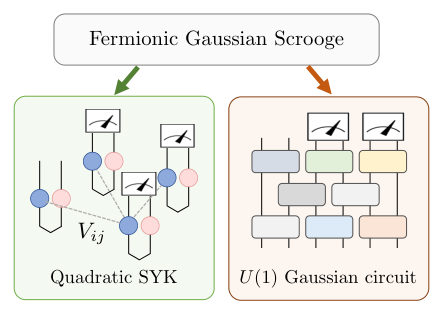
<figcaption class="paper-figure-caption"><b>Fig 1.</b> FIG. 1. Schematic illustration of fermionic Gaussian deep thermalization. We construct the fermionic Gaussian Scrooge ensemble by distorting the Gaussian Haar ensemble. We demonstrate its emergence in the projected ensembles of two systems: the SYK2 model at arbitrary evolution times and the random Gaussian circuits with charge conservation in the long-time limit.</figcaption>
</figure>
<figure class="paper-figure-card">
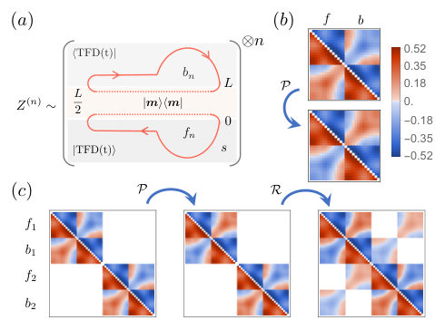
<figcaption class="paper-figure-caption"><b>Fig 2.</b> FIG. 2. (a) Illustration of the path integral for subsystem B with n replicas. (b) Two single-replica saddle-point solutions for GB+ related by the reflection symmetry P. (c) A con- tinuous branch of two-replica saddle-point solutions for GB+ generated by the replica rotation R and the reflection P act- ing on f1. In panels (b) and (c), the saddle-point solutions are obtained by iteratively solving Eq. (10) with V t = V β = 2 and λ = 0.8.</figcaption>
</figure>
<figure class="paper-figure-card">
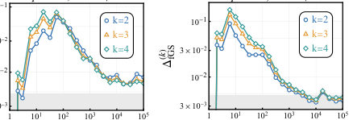
<figcaption class="paper-figure-caption"><b>Fig 3.</b> FIG. 3. Numerical results for random Gaussian circuits with U(1) symmetry. We consider four parameter combinations, with p ∈{0.2, 0.5} and θ ∈{π/4, π/10}. In all panels, we set NA = 4 and NB = 300 and sample Ns = 105 measurement outcomes. The result is obtained by a single disorder realiza- tion of both initial state and circuit realization. The shaded regions indicate the statistical uncertainty from the sampling of measurement outcomes.</figcaption>
</figure>
<figure class="paper-figure-card">
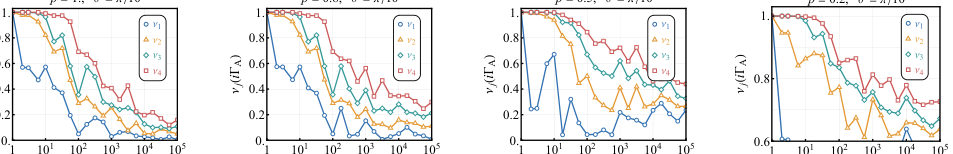
<figcaption class="paper-figure-caption"><b>Fig 4.</b> FIG. 1. Numerical results for random Gaussian circuits with U(1) symmetry. In all panels, we set NA = 4 and NB = 300 and sample Ns = 105 measurement outcomes. The results are obtained from a single realization of both the initial state and the random circuit. The shaded regions indicate the statistical uncertainty due to Monte Carlo sampling. The results clearly demonstrate convergence to the fGS ensemble with a nontrivial average density matrix for p &lt; 1.</figcaption>
</figure>
</div>

<p><strong>Summary.</strong> This work introduces the fermionic Gaussian Scrooge (fGS) ensemble to universally describe deep thermalization in free-fermion quantum systems. By analyzing the projected state after measurement, the authors prove that the ensemble converges to this specific Gaussian distortion, validating it for models like SYK2 and random Gaussian circuits. This provides a crucial theoretical tool for understanding quantum information scrambling in non-interacting fermionic settings.</p>
<p><strong>Why it may be interesting.</strong> The concept of a universal ensemble describing thermalization in non-chaotic (free-fermion) systems provides a powerful, analytically tractable generalization of concepts from chaotic systems.</p>
<details>
<summary>Detailed structure</summary>
<p><strong>Main problem.</strong> The paper addresses the theoretical description of deep thermalization in free-fermion systems following partial quantum measurements.</p>
<p><strong>Main result.</strong> It establishes the fermionic Gaussian Scrooge (fGS) ensemble as the universal description for this process, proving its emergence for models like SYK2 and random Gaussian circuits.</p>
<p><strong>Method.</strong> The authors use the replica trick and path integral methods, combined with a canonical purification technique, to calculate the moments of the projected quantum state ensemble.</p>
<p><strong>Model / system.</strong> The study focuses on free-fermion systems, exemplified by the SYK2 model and random Gaussian circuits, where the evolution is governed by quadratic Hamiltonians.</p>
<p><strong>Key observables.</strong> The projected ensemble moments ($
ho_{PE}^{(k)}$), the correlation matrix ($\Gamma$), and the deviation from the fGS ensemble ($\Delta f_{GS}(k)$).</p>
<p><strong>Important parameters / regimes.</strong> Evolution time ($t$), system size ($N$), and parameters defining the initial state (e.g., $p$ and $ heta$ for Gaussian circuits).</p>
<p><strong>Assumptions / limitations.</strong> The analysis relies on the system remaining Gaussian throughout evolution and utilizes the large-N expansion and saddle-point approximation for path integrals.</p>
<p><strong>Figures summary.</strong> Figures illustrate the schematic construction of the fGS ensemble, the path integrals and saddle-point solutions for SYK2, and numerical convergence plots showing the measured ensemble approaching the fGS prediction.</p>
<p><strong>Paper structure.</strong> The paper develops the fGS ensemble definition via purification, applies the replica trick to calculate projected moments for SYK2, and then confirms this universality numerically using random Gaussian circuits.</p>
</details>
<details>
<summary>Abstract</summary>
<p>Measuring part of a many-body wave function generates a projected ensemble of pure quantum states on the unmeasured subsystem. Recent advances in deep thermalization have shown that, in chaotic systems, this ensemble universally converges to the maximally random ensemble compatible with its average density matrix, known as the Scrooge ensemble. By contrast, free-fermion systems are nonchaotic, and their quantum states are constrained to remain Gaussian. Motivated by this distinction, we introduce the fermionic Gaussian Scrooge ensemble to describe deep thermalization in generic free-fermion systems. This ensemble is defined as a distortion of the Gaussian Haar ensemble by the average density matrix, and its moments reveal an enlarged symmetry of Gaussian states in the replicated Hilbert space. We demonstrate the emergence of the fermionic Gaussian Scrooge ensemble in two complementary settings: (1) we analytically prove that the projected ensemble of the SYK$_2$ model follows the fermionic Gaussian Scrooge ensemble at arbitrary evolution times; (2) we provide numerical evidence that it emerges at sufficiently long times in random Gaussian circuits with charge conservation. Our results establish the fermionic Gaussian Scrooge ensemble as a universal description of deep thermalization in free-fermion systems.</p>
</details>
<p><sub><a href="#top">↑ back to top</a></sub></p>

<p><a id="paper-2610.01394"></a></p>
<h3 id="vacuum-entanglement-in-a-time-dependent-electric-field"><a href="http://arxiv.org/abs/2610.01394v1">Vacuum entanglement in a time-dependent electric field</a></h3>
<p><strong>Authors:</strong> Álvaro Álvarez-Domínguez, Luis J. Garay, Mercedes Martín-Benito, Iker Sanz-González<br>
<strong>Type:</strong> theory · <strong>Category:</strong> other · <strong>PDF:</strong> <a href="https://arxiv.org/pdf/2610.01394v1">https://arxiv.org/pdf/2610.01394v1</a><br>
<strong>Analysis basis:</strong> full PDF text, analyzed in chunks
<strong>Topic relevance:</strong> <code>Keldysh / 2PI / non-Gaussian methods</code> <strong>3/5</strong> · <code>correlated / nonlocal dissipation</code> <strong>1/5</strong> · <code>driven-dissipative phase transition</code> <strong>1/5</strong> · <code>methods for driven-dissipative</code> <strong>1/5</strong> · <code>non-equilibrium universality</code> <strong>1/5</strong></p>
<div class="figure-strip-hint">↔ Scroll figures horizontally</div>
<div class="paper-figures-scroll">
<figure class="paper-figure-card">
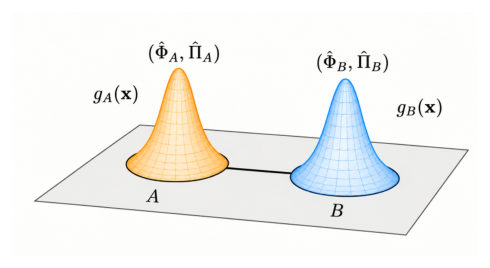
<figcaption class="paper-figure-caption"><b>Fig 1.</b> FIG. 1. Illustration of two spatially separated spherical re- gions, with gA,B(x) the smearing function defining the single modes (ˆΦA,B, ˆΠA,B).</figcaption>
</figure>
<figure class="paper-figure-card">
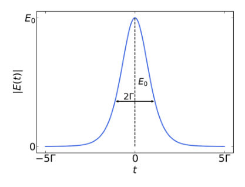
<figcaption class="paper-figure-caption"><b>Fig 2.</b> FIG. 2. Sauter-type electric pulse with amplitude E0 and a characteristic width parameter Γ, given by Eq. (28).</figcaption>
</figure>
<figure class="paper-figure-card">
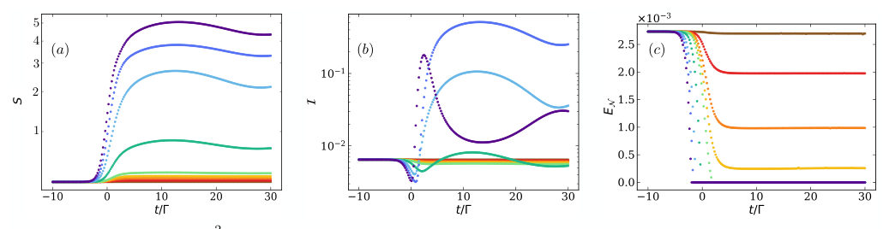
<figcaption class="paper-figure-caption"><b>Fig 3.</b> FIG. 3. Time evolution of the von Neumann entropy S (logarithmic scale), mutual information I (logarithmic scale), and logarithmic negativity EN (linear scale) for different values of qE0Γ2. Parameters: mΓ = 0.2, R = Γ, 3 × 3 bipartition.</figcaption>
</figure>
<figure class="paper-figure-card">
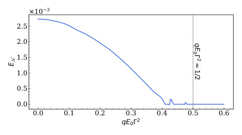
<figcaption class="paper-figure-caption"><b>Fig 4.</b> FIG. 4. Transition of the spontaneous entanglement at t/Γ = 25 ≫1. Parameters: mΓ = 0.2, R = Γ, 3 × 3 bipar- tition.</figcaption>
</figure>
<figure class="paper-figure-card">

<figcaption class="paper-figure-caption"><b>Fig 5.</b> FIG. 5. Mutual information anisotropy at t = 0 for different values of qE0Γ2. Parameters: mΓ = 0.2, R = Γ, 3 × 3 bipar- tition.</figcaption>
</figure>
</div>

<p><strong>Summary.</strong> This work investigates the quantum correlations within the vacuum state of a charged scalar field exposed to a time-varying electric field. By analyzing entanglement measures, the authors show that while total correlations increase, the usable entanglement decays to zero in finite time. This study connects non-perturbative particle production effects (Schwinger mechanism) to the dynamics of quantum information in curved or time-dependent backgrounds.</p>
<p><strong>Why it may be interesting.</strong> It provides a concrete, non-equilibrium QFT example where quantum information measures (entanglement) decay due to external driving fields, linking particle creation (Schwinger effect) directly to quantum correlations.</p>
<details>
<summary>Detailed structure</summary>
<p><strong>Main problem.</strong> The paper analyzes how vacuum entanglement and quantum correlations evolve in a charged scalar field subjected to a time-dependent, homogeneous electric field.</p>
<p><strong>Main result.</strong> The electric field increases state mixedness and total correlations, but the distillable entanglement decreases and vanishes at a finite time, demonstrating entanglement sudden death.</p>
<p><strong>Method.</strong> The analysis employs canonical quantization, Gaussian state formalism, and the calculation of correlation measures like mutual information and logarithmic negativity.</p>
<p><strong>Model / system.</strong> The system is a charged scalar field minimally coupled to an external, time-dependent electric field, studied in both (1+1) and (1+3) dimensional Minkowski spacetime.</p>
<p><strong>Key observables.</strong> Mixedness of states, total correlations, distillable entanglement, mutual information, and logarithmic negativity.</p>
<p><strong>Important parameters / regimes.</strong> Electric field strength ($E(t)$), pulse intensity, and the anisotropy angle ($\gamma$) relative to the field direction.</p>
<p><strong>Assumptions / limitations.</strong> The analysis relies on the Gaussian states formalism and assumes a spatially homogeneous external background field.</p>
<p><strong>Figures summary.</strong> Figure 5 illustrates the anisotropy of the mutual information at t=0, showing dependence on the angle $\gamma$ between the electric field and the separation vector.</p>
<p><strong>Paper structure.</strong> The paper reviews the field dynamics, details QI techniques for Gaussian states, applies these tools to QFT in Minkowski spacetime using local observables, and finally studies the time evolution and anisotropy using specific pulse profiles.</p>
</details>
<details>
<summary>Abstract</summary>
<p>We analyze the correlations of the vacuum state of a charged scalar field by constructing localized observables in two disjoint regions. We consider a time-dependent homogeneous electric field and examine the time evolution of correlations by relating it with the particle-antiparticle creation through the Schwinger effect. Our results show that the electric field increases the mixedness of the states and enhances total correlations, while the distillable entanglement among the regions decreases, vanishing at a finite time for sufficiently intense pulses within the non-perturbative pair-production regime. We also discuss the effect of anisotropy induced by the external background, showing that the distribution of correlations acquires a nontrivial directional dependence.</p>
</details>
<p><sub><a href="#top">↑ back to top</a></sub></p>

<p><a id="paper-2610.01609"></a></p>
<h3 id="electromagnetic-side-channel-vulnerability-in-qkd-equipment"><a href="http://arxiv.org/abs/2610.01609v1">Electromagnetic Side-Channel Vulnerability in QKD Equipment</a></h3>
<p><strong>Authors:</strong> Mikio Fujiwara, Katsumi Fujii, Fumie Ono, Masakazu Ono, Akihisa Tomita<br>
<strong>Type:</strong> experiment · <strong>Category:</strong> quantum information and computing · <strong>PDF:</strong> <a href="https://arxiv.org/pdf/2610.01609v1">https://arxiv.org/pdf/2610.01609v1</a><br>
<strong>Analysis basis:</strong> full PDF text, analyzed in chunks
<strong>Topic relevance:</strong> <code>QC/QI experiment</code> <strong>3/5</strong> · <code>quantum optics experiment</code> <strong>2/5</strong> · <code>quantum measurements</code> <strong>1/5</strong></p>
<div class="figure-strip-hint">↔ Scroll figures horizontally</div>
<div class="paper-figures-scroll">
<figure class="paper-figure-card">

<figcaption class="paper-figure-caption"><b>Fig 1.</b> FIGURE 1. The QKD transmitter prototype used in the experiment. (A) Schematic diagram of quantum communication section. Two lithium niobate modulators are driven by control pulses. (B) Pulse sequence for the state generation. RNG is a random number generator.</figcaption>
</figure>
<figure class="paper-figure-card">

<figcaption class="paper-figure-caption"><b>Fig 2.</b> FIGURE 2. The QKD module (transmitter) placed in a shield room. Antennas were placed at 3 m from the QKD module. III. RESULTS AND DISCUSSION</figcaption>
</figure>
<figure class="paper-figure-card">

<figcaption class="paper-figure-caption"><b>Fig 3.</b> FIGURE 3. Electromagnetic wave spectra from the QKD transmitter (Alice) and the receiver (Bob). Triangles indicate clock (1241.6 MHz) and its harmonics. The traces were obtained through the utilization of a ten- point moving average. The intensity spectra were measured with reference to the spectrum when both Alice and Bob were powered OFF. Top: Both Alice and Bob were ON. Middle: Alice was ON, but Bob was OFF. Bottom: Power of Alice was ON but state modulation was stopped; Bob was OFF.</figcaption>
</figure>
<figure class="paper-figure-card">

<figcaption class="paper-figure-caption"><b>Fig 4.</b> FIGURE 4. Measured EM spectrum from the QKD transmitter (Alice) at 3 m. The frequency ranges, from left to right, are 10–300 MHz, 300– 2000 MHz, and 1000–6000 MHz. The quantum states set in the transmitter are, from top to bottom, Z0, Z1, Y0, and Y1. Green represents the observed spectrum, while blue indicates the difference from the spectrum in the Z0 state. Areas showing significant differences are circled in red. The master clock (m-clock) frequency is indicated by a blue triangle, and the optical signal clock by a red triangle. No correction was made for background noise or antenna gain.</figcaption>
</figure>
<figure class="paper-figure-card">

<figcaption class="paper-figure-caption"><b>Fig 5.</b> FIGURE 5. Observed waveforms of EM field for Y0, Y1, Z0, and Z1 states at 0 m. Orange lines: real time oscilloscope traces. Blue lines: moving averages over 25 samples (corresponding to 800 ps).</figcaption>
</figure>
</div>

<p><strong>Summary.</strong> This paper experimentally demonstrates that real-world QKD hardware leaks information about the transmitted quantum state via electromagnetic radiation. By measuring these emissions, the authors show that the transmitter is the main source of leakage, and the state-dependent signals allow for potential eavesdropping. The findings emphasize the critical need for robust physical shielding and hardware design to secure quantum communication networks.</p>
<p><strong>Why it may be interesting.</strong> This work bridges the gap between the theoretical security of quantum protocols and the practical, physical layer vulnerabilities, which is crucial for designing robust quantum network hardware.</p>
<details>
<summary>Detailed structure</summary>
<p><strong>Main problem.</strong> The physical implementation of Quantum Key Distribution (QKD) nodes is vulnerable to side-channel attacks, specifically through measurable electromagnetic (EM) leakage.</p>
<p><strong>Main result.</strong> The QKD transmitter was identified as the primary source of EM leakage, and distinct, state-dependent spectral differences were observed, suggesting that quantum states can be inferred from the leaked EM radiation.</p>
<p><strong>Method.</strong> The study involved measuring EM spectra and waveforms at 0 m and 3 m distances using specialized antennas in an anechoic chamber, comparing measurements with and without EM shielding.</p>
<p><strong>Model / system.</strong> The experiment utilized a prototype QKD device implementing a time-bin decoy-state BB84 protocol with Y and Z bases.</p>
<p><strong>Key observables.</strong> EM spectra and waveforms, state-dependent spectral differences (especially at the third harmonic of the 1241.6 MHz clock), and the attenuation factor provided by EM shielding.</p>
<p><strong>Important parameters / regimes.</strong> Measurement distances (0 m, 3 m), frequency bands (10–6000 MHz), and the average attenuation achieved by shielding (21.2 dB).</p>
<p><strong>Assumptions / limitations.</strong> The analysis assumes that the observed EM differences are due to the quantum state being transmitted, and that the threat can be mitigated by proper EM shielding.</p>
<p><strong>Figures summary.</strong> Figures illustrate the QKD transmitter setup, the shielding effect by comparing emissions with and without the rack door closed, and the state-dependent EM spectra.</p>
<p><strong>Paper structure.</strong> The paper progresses from identifying the theoretical vulnerability of QKD to presenting detailed experimental measurements of EM leakage from the transmitter, quantifying the state-dependent signals, and concluding with necessary physical countermeasures.</p>
</details>
<details>
<summary>Abstract</summary>
<p>Actual quantum key distribution network nodes may be vulnerable to side-channel attacks such as electromagnetic leakage. In this study, we measured electromagnetic emissions from a prototype quantum key distribution device implementing a time-bin decoy-state BB84 protocol with Y and Z bases. We measured the electromagnetic spectra and waveforms at distances of 0 m and 3 m from the transmitter and receiver inside an anechoic chamber. The results showed that the transmitter was the primary source of electromagnetic leakage, and distinct differences were observed between the quantum states generated at the third harmonic of the 1241.6 MHz clock.</p>
</details>
<p><sub><a href="#top">↑ back to top</a></sub></p>

<p><a id="paper-2610.01074"></a></p>
<h3 id="the-stationarity-test-a-framework-for-learning-quantum-many-body-systems-from-their-thermal-states"><a href="http://arxiv.org/abs/2610.01074v1">The stationarity test: a framework for learning quantum many-body systems from their thermal states</a></h3>
<p><strong>Authors:</strong> Thiago Bergamaschi<br>
<strong>Type:</strong> theory · <strong>Category:</strong> statistical mechanics · <strong>PDF:</strong> <a href="https://arxiv.org/pdf/2610.01074v1">https://arxiv.org/pdf/2610.01074v1</a><br>
<strong>Analysis basis:</strong> full PDF text, analyzed in chunks
<strong>Topic relevance:</strong> <code>analog quantum simulation</code> <strong>3/5</strong> · <code>quantum measurements</code> <strong>2/5</strong> · <code>methods for driven-dissipative</code> <strong>1/5</strong></p>
<div class="figure-strip-hint">↔ Scroll figures horizontally</div>
<div class="paper-figures-scroll">
<figure class="paper-figure-card">

<figcaption class="paper-figure-caption"><b>Fig 1.</b> Figure 1: A cartoon of the “neighborhood guessing” structure learning algorithm. A ground truth 2- local Hamiltonian H lies on the edges of an unknown square lattice. The current guess Hamiltonian G (edges in blue) is a strict subgraph of H (missing edges in dashed black). In each iterative step, we “guess” the neighborhood of a qubit, by perturbing G+U with a small cluster U of 2-local terms (orange). The stationarity test then evaluates the rate of change of 2-local observables (purple), evolved under LG+U, truncated to a finite radius (gray) around the origin.</figcaption>
</figure>
<figure class="paper-figure-card">

<figcaption class="paper-figure-caption"><b>Fig 2.</b> Figure 2: A cartoon of the Hamiltonian learning problem from metastable states. A metastable state (orange gradient) lies in a double well, depicting a toy model of the free energy landscape of low temperature, 2D Ising model configurations of average magnetization x (black curve). The learning algorithm guesses a Hamiltonian, and attempts to “fit” to the free-energy landscape (blue curve), by checking if the sampled state is also metastable w.r.t. the guess. See Question 1.9.</figcaption>
</figure>
<figure class="paper-figure-card">

<figcaption class="paper-figure-caption"><b>Fig 3.</b> Figure 3: The sample-optimal neighborhood guessing algorithm. (a) The Test associated to a locally perturbed Hamiltonian G+ηU is computed by first estimating the test under the current Hamiltonian G, truncated to radius R ∼log η−1 (gray). This ‘baseline’ is refined by local measurements at radius L (red) around the perturbation (17). (b) The sites are partitioned into disjoint ‘colors’ (only 3 pictured), each with non-overlapping radius R balls, and performed in parallel. A randomization scheme is used to address observables (purple) crossing balls of the same color (see Algorithm 4).</figcaption>
</figure>
</div>

<p><strong>Summary.</strong> This paper introduces the 'stationarity test,' a novel theoretical framework to reconstruct the Hamiltonian of a quantum many-body system using only samples of its thermal Gibbs states. It provides rigorous algorithms for both determining the interaction structure and estimating the coupling coefficients. By connecting this test to the Quantum Fisher Information, it offers a powerful tool for quantum machine learning in condensed matter physics.</p>
<p><strong>Why it may be interesting.</strong> This work provides a powerful, data-driven theoretical tool to characterize the underlying physics (Hamiltonian) of complex quantum systems using only measurements of their thermal equilibrium or near-equilibrium states, which is highly relevant for simulating and understanding open quantum systems.</p>
<details>
<summary>Detailed structure</summary>
<p><strong>Main problem.</strong> The core problem is learning the unknown Hamiltonian interactions governing a quantum many-body system solely from samples of its thermal (Gibbs) states.</p>
<p><strong>Main result.</strong> The authors introduce the 'stationarity test' as a rigorous framework to perform structure and parameter learning for lattice Hamiltonians, even when only metastable states are accessible.</p>
<p><strong>Method.</strong> The method centers on the stationarity test, which measures the rate-of-change of local observables under the dynamics generated by a guessed Hamiltonian, linking this test to the Quantum Fisher Information.</p>
<p><strong>Model / system.</strong> The system involves quantum many-body systems modeled by lattice Hamiltonians, $H = \sum h_\gamma P_\gamma$, whose thermal equilibrium states are the Gibbs states, $
ho_H = e^{-eta H} /    ext{tr}[e^{-eta H}]$.</p>
<p><strong>Key observables.</strong> Local observables ($O$), the rate-of-change measured by the stationarity test ($   ext{Test}_i$), and the Quantum Fisher Information (FIG).</p>
<p><strong>Important parameters / regimes.</strong> Inverse temperature ($eta$), system size ($n$), approximation error ($\eta$), and the locality/distance parameter ($\ell$).</p>
<p><strong>Assumptions / limitations.</strong> The framework assumes that the stationarity test yielding zero implies the guessed Hamiltonian is close to the true one, and it extends to using metastable states instead of true Gibbs states.</p>
<p><strong>Figures summary.</strong> Not specified.</p>
<p><strong>Paper structure.</strong> The paper establishes the stationarity test framework, details algorithms for structure learning from Gibbs states, and presents extensions for parameter learning using thermal metastable states, concluding with a refinement of the area law for these metastable states.</p>
</details>
<details>
<summary>Abstract</summary>
<p>The task of learning the Hamiltonian interactions governing a quantum system, given samples of its thermal (or 'Gibbs') states, is a foundational question at the intersection of quantum learning theory and many-body physics. In this paper, we draw connections to the quantum Gibbs sampling literature to introduce a natural learning algorithm we call the stationarity test: which simply "guesses" the Hamiltonian, and measures the rate-of-change of local observables, under the associated detailed-balanced quantum Markov chain [CKG23]. We leverage the stationarity test to address the following applications:   1. To give the first learning algorithm for the underlying interaction graph, i.e. structure learning, of lattice Hamiltonians at all temperatures, given copies of their Gibbs states.   2. To give the first learning algorithm for the coefficients of a lattice Hamiltonian, given only copies of its thermal metastable states, modeled as the "local minima" of the free energy.   3. In addition, we present a refinement to the recent area law for thermal metastable states [BCV25], which holds in the thermodynamic limit.   Our learning algorithms are rigorous, time-efficient, and nearly sample-optimal in system size and accuracy. At a technical level, our arguments are based on new approximate locality and convexity properties for the quantum Fisher information of these Gibbs sampling algorithms.</p>
</details>
<p><sub><a href="#top">↑ back to top</a></sub></p>

<p><a id="paper-2610.01878"></a></p>
<h3 id="floquet-universal-hamiltonian-simulation"><a href="http://arxiv.org/abs/2610.01878v1">Floquet-Universal Hamiltonian Simulation</a></h3>
<p><strong>Authors:</strong> Emilio Onorati, Harriet Apel, Michael M. Wolf, Toby Cubitt<br>
<strong>Type:</strong> theory · <strong>Category:</strong> other · <strong>PDF:</strong> <a href="https://arxiv.org/pdf/2610.01878v1">https://arxiv.org/pdf/2610.01878v1</a><br>
<strong>Analysis basis:</strong> full PDF text, analyzed in chunks
<strong>Topic relevance:</strong> <code>analog quantum simulation</code> <strong>3/5</strong> · <code>Keldysh / 2PI / non-Gaussian methods</code> <strong>1/5</strong> · <code>methods for driven-dissipative</code> <strong>1/5</strong></p>
<div class="figure-strip-hint">↔ Scroll figures horizontally</div>
<div class="paper-figures-scroll">
<figure class="paper-figure-card">

<figcaption class="paper-figure-caption"><b>Fig 1.</b> Low-resolution page preview, page 2</figcaption>
</figure>
<figure class="paper-figure-card">

<figcaption class="paper-figure-caption"><b>Fig 2.</b> Low-resolution page preview, page 3</figcaption>
</figure>
<figure class="paper-figure-card">

<figcaption class="paper-figure-caption"><b>Fig 3.</b> Low-resolution page preview, page 4</figcaption>
</figure>
<figure class="paper-figure-card">

<figcaption class="paper-figure-caption"><b>Fig 4.</b> Low-resolution page preview, page 5</figcaption>
</figure>
<figure class="paper-figure-card">

<figcaption class="paper-figure-caption"><b>Fig 5.</b> Low-resolution page preview, page 6</figcaption>
</figure>
</div>

<p><strong>Summary.</strong> This paper develops the theory of Floquet simulation, demonstrating how periodically driven quantum systems can efficiently mimic the dynamics of arbitrary time-independent Hamiltonians. It provides a constructive proof that for local lattice Hamiltonians, the required driving frequencies and interaction strengths scale polynomially with system size. This offers a theoretically superior and more experimentally feasible alternative to traditional analogue simulation methods.</p>
<p><strong>Why it may be interesting.</strong> This work provides a rigorous theoretical framework for engineering quantum dynamics using time-periodic driving, which is highly relevant for designing experiments with trapped ions or superconducting circuits where smooth, periodic driving is feasible.</p>
<details>
<summary>Detailed structure</summary>
<p><strong>Main problem.</strong> The paper establishes a comprehensive theory for Floquet simulation, aiming to synthesize arbitrary time-independent quantum Hamiltonians using periodically driven (Floquet) systems.</p>
<p><strong>Main result.</strong> It provides a constructive characterization showing that Floquet-universal Hamiltonians can simulate any Hamiltonian in their generated Lie algebra, with efficient scaling for local lattice Hamiltonians.</p>
<p><strong>Method.</strong> The work uses advanced algebraic techniques, including analysis of the Magnus expansion and Lie algebra theory, to relate the effective time-independent dynamics to the driving parameters.</p>
<p><strong>Model / system.</strong> The study analyzes quantum systems governed by time-periodic Hamiltonians, $H(t)$, comparing this to time-independent (analogue) and fully time-dependent (digital) simulation regimes.</p>
<p><strong>Key observables.</strong> Quasi-energies, Floquet states, and the fidelity of simulation ($\epsilon$).</p>
<p><strong>Important parameters / regimes.</strong> The required local interaction strengths and the scaling of driving frequencies, which are shown to be polynomial in system size for local Hamiltonians.</p>
<p><strong>Assumptions / limitations.</strong> The analysis relies on the target Hamiltonian admitting a structure that allows for decomposition into commuting families of Lie polynomials, and that the generated Lie algebra is perfect.</p>
<p><strong>Paper structure.</strong> The paper progresses by first establishing the general theory of Floquet simulation power, then developing algebraic tools (like Lemma 55) to bound frequency coefficients, and finally applying these tools to prove efficient simulation theorems (Theorem 57) for $k$-local lattice Hamiltonians.</p>
</details>
<details>
<summary>Abstract</summary>
<p>Analogue and digital Hamiltonian simulation represent two distinct approaches to making one quantum system replicate the physical properties of another, with consequences ranging from practical applications to complexity theory and quantum gravity. They are rooted in two distinct regimes of quantum dynamics: time-independent Hamiltonians for the former; fully controllable time-dependent quantum circuits in the latter. Time-periodic Hamiltonians represent an intermediate regime. In this work, we establish a theory of Floquet simulation where we use periodically driven Hamiltonians to synthesise time-independent ones.   We show that a set of interactions $S$ can Floquet-simulate every Hamiltonian in the Lie algebra $\mathrm{Lie}(S)$, and consequently we give a complete and constructive characterisation of Floquet-universal Hamiltonians that are able to produce any target Hamiltonian. Notably, our construction uses only $O(1)$ local interaction strengths and ratios thereof, avoiding the impractical multi-scale local interaction strengths often required in analogue simulation via time-independent Hamiltonians. Instead, the construction requires a range of driving frequencies which scales polynomially with system size for important classes such as $k$-local lattice Hamiltonians. This has immediate complexity-theoretic implications, including numerous BQP-completeness and QMA-hardness results for natural physical properties and quantities studied in Floquet physics.</p>
</details>
<p><sub><a href="#top">↑ back to top</a></sub></p>

<p><a id="paper-2610.01797"></a></p>
<h3 id="generalized-fluctuation-dissipation-theorem-and-einstein-relation-in-rotating-equilibrium"><a href="http://arxiv.org/abs/2610.01797v1">Generalized fluctuation-dissipation theorem and Einstein relation in rotating equilibrium</a></h3>
<p><strong>Authors:</strong> Shuo Fang, Shi Pu<br>
<strong>Type:</strong> theory · <strong>Category:</strong> statistical mechanics · <strong>PDF:</strong> <a href="https://arxiv.org/pdf/2610.01797v1">https://arxiv.org/pdf/2610.01797v1</a><br>
<strong>Analysis basis:</strong> full PDF text, analyzed in chunks
<strong>Topic relevance:</strong> <code>Keldysh / 2PI / non-Gaussian methods</code> <strong>3/5</strong> · <code>correlated / nonlocal dissipation</code> <strong>1/5</strong> · <code>non-equilibrium universality</code> <strong>1/5</strong></p>
<div class="figure-strip-hint">↔ Scroll figures horizontally</div>
<div class="paper-figures-scroll">
<figure class="paper-figure-card">

<figcaption class="paper-figure-caption"><b>Fig 1.</b> Low-resolution page preview, page 2</figcaption>
</figure>
<figure class="paper-figure-card">

<figcaption class="paper-figure-caption"><b>Fig 2.</b> Low-resolution page preview, page 3</figcaption>
</figure>
<figure class="paper-figure-card">

<figcaption class="paper-figure-caption"><b>Fig 3.</b> Low-resolution page preview, page 4</figcaption>
</figure>
<figure class="paper-figure-card">

<figcaption class="paper-figure-caption"><b>Fig 4.</b> Low-resolution page preview, page 5</figcaption>
</figure>
<figure class="paper-figure-card">

<figcaption class="paper-figure-caption"><b>Fig 5.</b> Low-resolution page preview, page 6</figcaption>
</figure>
</div>

<p><strong>Summary.</strong> This theoretical work generalizes the fluctuation-dissipation theorem and Einstein relations to systems in rotating thermal equilibrium. By starting from the phase-space KMS relation, the authors derive new tensorial contributions and establish a novel link between spectral zero modes and transport coefficients. This provides essential microscopic constraints for modeling quantum matter under rotation, such as in the quark-gluon plasma.</p>
<p><strong>Why it may be interesting.</strong> The work provides fundamental, model-independent equilibrium constraints for studying non-equilibrium phenomena in rotating quantum matter, which is crucial for understanding heavy-ion collision signatures.</p>
<details>
<summary>Detailed structure</summary>
<p><strong>Main problem.</strong> The paper derives generalized fluctuation-dissipation theorems (FDT) and Einstein relations for vector fields in a system undergoing rotating thermal equilibrium.</p>
<p><strong>Main result.</strong> It establishes a model-independent generalized Einstein relation and discovers a new Einstein-type relation linking spectral zero modes to the nonrotating drag coefficient, applicable to studying rotating quantum matter.</p>
<p><strong>Method.</strong> The derivation starts from the exact phase-space Kubo-Martin-Schwinger (KMS) relation, generalizing it to include total angular momentum conservation, and then applying linear response theory.</p>
<p><strong>Model / system.</strong> The theory applies to general many-body quantum systems, with physical relevance highlighted in the context of the quark-gluon plasma and heavy quarkonium polarization in highly vortical media.</p>
<p><strong>Key observables.</strong> Generalized FDT, generalized Einstein relation, spectral zero modes ($\gamma_{ij}^0$), and orbital polarization ($\langle L_z 
angle_J$).</p>
<p><strong>Important parameters / regimes.</strong> Thermal vorticity ($\varpi_{\mu
u}$), low-frequency spectral information, and the nonrotating drag coefficient ($\eta^D$).</p>
<p><strong>Assumptions / limitations.</strong> The derivation assumes global equilibrium constrained by energy-momentum and total-angular-momentum conservation, and utilizes local approximations in the transport analysis.</p>
<p><strong>Figures summary.</strong> Not specified by the notes.</p>
<p><strong>Paper structure.</strong> The paper progresses by deriving the generalized FDT from the KMS relation, then obtaining the generalized Einstein relation, and finally applying these constraints to specific physical phenomena like quarkonium polarization and detailed balance.</p>
</details>
<details>
<summary>Abstract</summary>
<p>We derive a generalized fluctuation-dissipation theorem (FDT) for vector fields in rotating thermal equilibrium from an exact phase-space Kubo-Martin-Schwinger (KMS) relation. The resulting FDT contains rotation-induced tensorial contributions beyond a scalar thermal factor. In the local transport limit, we obtain a model-independent generalized Einstein relation with rotation in which, through second order in thermal vorticity, symmetric momentum diffusion depends on low-frequency spectral information beyond that encoded in the rotation-dependent dissipative drag. Remarkably, we find a new Einstein-type relation linking zero modes in the spectral function to the nonrotating drag coefficient. These zero modes underlie a new mechanism for the orbital polarization of heavy quarkonium. The same FDT constraint yields a modified detailed-balance relation whose first-order vortical correction is governed by transition polarization, without explicit dependence on the bath model. Our findings establish microscopic equilibrium constraints for studying rotating quantum matter in various fields.</p>
</details>
<p><sub><a href="#top">↑ back to top</a></sub></p>

<p><a id="paper-2610.00777"></a></p>
<h3 id="on-the-spectra-of-strong-turbulence-on-water-surfaces"><a href="http://arxiv.org/abs/2610.00777v1">On the spectra of strong turbulence on water surfaces</a></h3>
<p><strong>Authors:</strong> Gregory Falkovich<br>
<strong>Type:</strong> theory · <strong>Category:</strong> statistical mechanics · <strong>PDF:</strong> <a href="https://arxiv.org/pdf/2610.00777v1">https://arxiv.org/pdf/2610.00777v1</a><br>
<strong>Analysis basis:</strong> full PDF text, analyzed in chunks
<strong>Topic relevance:</strong> <code>non-equilibrium universality</code> <strong>3/5</strong> · <code>Keldysh / 2PI / non-Gaussian methods</code> <strong>2/5</strong></p>
<div class="figure-strip-hint">↔ Scroll figures horizontally</div>
<div class="paper-figures-scroll">
<figure class="paper-figure-card">

<figcaption class="paper-figure-caption"><b>Fig 1.</b> Low-resolution page preview, page 2</figcaption>
</figure>
<figure class="paper-figure-card">

<figcaption class="paper-figure-caption"><b>Fig 2.</b> Low-resolution page preview, page 3</figcaption>
</figure>
<figure class="paper-figure-card">

<figcaption class="paper-figure-caption"><b>Fig 3.</b> Low-resolution page preview, page 4</figcaption>
</figure>
<figure class="paper-figure-card">

<figcaption class="paper-figure-caption"><b>Fig 4.</b> Low-resolution page preview, page 5</figcaption>
</figure>
<figure class="paper-figure-card">

<figcaption class="paper-figure-caption"><b>Fig 5.</b> Low-resolution page preview, page 6</figcaption>
</figure>
</div>

<p><strong>Summary.</strong> This paper analyzes the spectral behavior of strong turbulence on water surfaces, moving beyond simple weak-turbulence approximations. It predicts that the energy cascade leads to a strong-turbulence spectrum characterized by $\omega^{-4}$ and $k^{-4}$ dependencies. The work highlights that the transition to strong turbulence is governed by non-local interactions, making the resulting spectrum dependent on the initial energy pumping.</p>
<p><strong>Why it may be interesting.</strong> The study of non-equilibrium energy cascades and spectral transitions in wave systems provides theoretical tools applicable to understanding energy dissipation and non-linear dynamics in complex physical systems, which shares mathematical structure with certain many-body relaxation processes.</p>
<details>
<summary>Detailed structure</summary>
<p><strong>Main problem.</strong> The paper investigates the spectral characteristics of strong turbulence on water surfaces, focusing on the direct energy cascade of gravity waves.</p>
<p><strong>Main result.</strong> The strong-turbulence spectrum is predicted to be $\langle|\eta_k|^2
angle \propto k^{-4}$ and $\Psi(\omega) \propto \omega^{-4}$, suggesting the spectrum is not universal and depends on the pumping strength.</p>
<p><strong>Method.</strong> The analysis combines weak-turbulence theory (Zakharov's approach) with renormalization group techniques to study the transition from weak to strong turbulence.</p>
<p><strong>Model / system.</strong> The system is the surface of water undergoing strong turbulence, modeled using wave dynamics equations that account for gravity and wave interactions.</p>
<p><strong>Key observables.</strong> Wavenumber spectrum $\langle|\eta_k|^2
angle$, frequency spectrum $\Psi(\omega)$, and the critical balance parameter $\epsilon_k$.</p>
<p><strong>Important parameters / regimes.</strong> Pumping strength ($u$), peak wavenumber ($k_p$), and the transition scale $k^*$.</p>
<p><strong>Assumptions / limitations.</strong> The analysis assumes the validity of weak-turbulence theory at low energy levels and examines the breakdown due to spectrally nonlocal interactions.</p>
<p><strong>Paper structure.</strong> The paper progresses from reviewing the weak-turbulence theory for long waves to analyzing the transition to strong turbulence, deriving new spectral forms, and comparing the roles of gravity versus capillarity.</p>
</details>
<details>
<summary>Abstract</summary>
<p>Here, I give a brief history of the theory, with twists and turns, and list possible predictions for the spectra of the direct cascade of gravity waves on the water. The description of long waves is straightforward within the weak-turbulence theory developed by Zakharov and his school. As the energy cascade proceeds to shorter scales, the mean surface steepness grows, and wave-breaking events appear with increasing frequency. Considering surface cusps, Phillips suggested a wavenumber spectrum (with a wrong magnitude, as I argue here) and a frequency spectrum whose whole form is incorrect. The right form for the frequency spectral slope due to breaking waves was suggested by Kuznetsov. Here we estimate the magnitude and argue that the frequency spectrum is expected to continue unchanged through the whole cascade. The transition from weak to strong turbulence in the wavenumber and spatio-temporal spectra is due to spectrally nonlocal interactions and happens earlier (at larger scales) than the dimensional estimate suggests. As a result, the magnitude of the strong-turbulence spectrum is not universal but depends on the pumping for a sufficiently long weak-turbulence cascade. The reason for nonlocality is likely that breaking of shorter waves is determined by the magnitude of the longest wave on whose crest they are running.</p>
</details>
<p><sub><a href="#top">↑ back to top</a></sub></p>

<p><a id="paper-2610.01327"></a></p>
<h3 id="preservability-of-measurement-incompatibility-purification-activation-and-a-no-go-theorem"><a href="http://arxiv.org/abs/2610.01327v1">Preservability of Measurement Incompatibility: Purification, Activation, and a No-Go Theorem</a></h3>
<p><strong>Authors:</strong> Chao-Hsien Wu, Franco Nori, Huan-Yu Ku<br>
<strong>Type:</strong> theory · <strong>Category:</strong> quantum information and computing · <strong>PDF:</strong> <a href="https://arxiv.org/pdf/2610.01327v1">https://arxiv.org/pdf/2610.01327v1</a><br>
<strong>Analysis basis:</strong> full PDF text, analyzed in chunks
<strong>Topic relevance:</strong> <code>quantum measurements</code> <strong>3/5</strong> · <code>correlated / nonlocal dissipation</code> <strong>1/5</strong> · <code>driven-dissipative phase transition</code> <strong>1/5</strong></p>
<div class="figure-strip-hint">↔ Scroll figures horizontally</div>
<div class="paper-figures-scroll">
<figure class="paper-figure-card">

<figcaption class="paper-figure-caption"><b>Fig 1.</b> Figure 1. Scheme of IA channels. A channel N is incompati- bility annihilating if, after applying the channel, the measure- ment statistic Tr  ρN †(Ma|x)  can always reproduced by us- ing a jointly measurable measurements P</figcaption>
</figure>
<figure class="paper-figure-card">

<figcaption class="paper-figure-caption"><b>Fig 2.</b> Figure 2. Schematic diagrams and numerical results for different filtering scenarios. (a)–(c) show the setups for the pre-filter only, post-filter only, and pre-post-filter cases, respectively. And (d)–(f) show the corresponding numerical results.</figcaption>
</figure>
</div>

<p><strong>Summary.</strong> This work develops a resource theory to quantify measurement incompatibility preservability under noise. The authors prove that while noise can destroy this resource, they establish a no-go theorem against pre-filtering recovery but show that post-filtering can successfully activate the resource. This provides a practical guide for exploiting incompatibility in quantum information protocols.</p>
<p><strong>Why it may be interesting.</strong> It provides a rigorous, quantitative framework (resource theory) for understanding how fundamental quantum correlations, like measurement incompatibility, are degraded by noise and how they might be recovered or utilized.</p>
<details>
<summary>Detailed structure</summary>
<p><strong>Main problem.</strong> The paper investigates the fundamental quantum resource of measurement incompatibility and how its preservation degrades under noisy quantum channels.</p>
<p><strong>Main result.</strong> They establish a no-go theorem showing pre-filtering cannot activate incompatibility, but demonstrate that post-filtering can stochastically activate such channels.</p>
<p><strong>Method.</strong> The authors develop a resource theory framework, introducing robustness-based monotones, and utilize semidefinite programming (SDP) and iterative algorithms (seesaw) to quantify these properties.</p>
<p><strong>Model / system.</strong> The study focuses on quantum channels ($\mathcal{N}$) acting on quantum systems, characterized by measurement assemblages ($\{M_a\}_{a,x}$), and the concept of measurement incompatibility.</p>
<p><strong>Key observables.</strong> Measurement Incompatibility, Resource Monotone $R_{	ext{JIMIP}}(\mathcal{N})$, Quantum Steerability.</p>
<p><strong>Important parameters / regimes.</strong> Noise strength ($t$), channel parameters (e.g., amplitude damping parameter $p$).</p>
<p><strong>Assumptions / limitations.</strong> The analysis relies on reformulating the resource measure using the Choi–Jamiolkowski isomorphism and assuming the equivalence between steering and measurement incompatibility.</p>
<p><strong>Figures summary.</strong> Figures illustrate the schemes for IA channels and numerically compare the preservation/activation of incompatibility using pre-filter only, post-filter only, and combined pre-post-filter operations.</p>
<p><strong>Paper structure.</strong> The paper introduces the resource theory, defines the monotone $R_{	ext{JIMIP}}$, proves its properties (Faithfulness, Monotonicity), establishes the no-go theorem for pre-filtering, and finally demonstrates activation via post-filtering.</p>
</details>
<details>
<summary>Abstract</summary>
<p>Measurement incompatibility is a fundamental quantum resource that enables advantages in many quantum information tasks, including cryptography and communication. However, unavoidable interactions between a system and its environment can degrade or even completely destroy measurement incompatibility; such a process is referred to as a measurement-incompatibility-annihilating channel. Recently, the capability of noisy quantum dynamics to preserve measurement incompatibility has been characterized within the resource theory of measurement incompatibility preservability. This motivates studying how to purify the preservation of measurement incompatibility and how to activate it from a measurement-incompatibility-annihilating channel. To this end, we first introduce our figures of merit as robustness-based resource monotones within this resource theory. We demonstrate that while pre-filtering operations can strengthen measurement incompatibility preservability, they cannot activate it from an incompatibility-annihilating channel, establishing a no-go theorem. Furthermore, we explicitly demonstrate that an incompatibility-annihilating channel can be stochastically activated via post-filtering operations. Our results provide a practical framework for exploiting measurement incompatibility in quantum information processing.</p>
</details>
<p><sub><a href="#top">↑ back to top</a></sub></p>

<p><a id="paper-2610.02130"></a></p>
<h3 id="quantum-impurity-models-easy-at-equilibrium-universal-in-motion"><a href="http://arxiv.org/abs/2610.02130v1">Quantum impurity models: easy at equilibrium, universal in motion</a></h3>
<p><strong>Authors:</strong> Srinivasan Arunachalam, Sergey Bravyi, Anirban Chowdhury, Arkopal Dutt, Alexandru Gheorghiu, Zhi Li<br>
<strong>Type:</strong> theory · <strong>Category:</strong> quantum information and computing · <strong>PDF:</strong> <a href="https://arxiv.org/pdf/2610.02130v1">https://arxiv.org/pdf/2610.02130v1</a><br>
<strong>Analysis basis:</strong> full PDF text, analyzed in chunks
<strong>Topic relevance:</strong> <code>analog quantum simulation</code> <strong>3/5</strong> · <code>Keldysh / 2PI / non-Gaussian methods</code> <strong>1/5</strong> · <code>methods for driven-dissipative</code> <strong>1/5</strong></p>
<div class="figure-strip-hint">↔ Scroll figures horizontally</div>
<div class="paper-figures-scroll">
<figure class="paper-figure-card">

<figcaption class="paper-figure-caption"><b>Fig 1.</b> Figure 1: Shell Krylov representation of a quantum impurity model. The figure illustrates the energy shells and Krylov layers. After creating a small artificial gap ω &gt; 0 in the bath Hamiltonian and changing the one-particle basis, the Hamiltonian is represented as a network of fermionic blocks indicated by boxes. Each box contains at most m fermionic modes, where m = O(1) is the impurity size. Each horizontal chain of boxes corresponds to a dyadic energy shell spanned by bath modes with excitation energies in [2pω, 2p+1ω) for some integer p ≥0. Blue boxes in each horizontal chain are successive orthogonal Krylov layers. The quadratic bath Hamiltonian couples nearest-neighbor boxes in each...</figcaption>
</figure>
<figure class="paper-figure-card">

<figcaption class="paper-figure-caption"><b>Fig 2.</b> Figure 2: The two stages of the construction. We first rewrite the quantum circuit as a sequence of interactions with the same constant-size system. We then realize this computation using the time evolution of a quantum impurity model.</figcaption>
</figure>
<figure class="paper-figure-card">

<figcaption class="paper-figure-caption"><b>Fig 3.</b> Figure 3: Blue: Momentum distribution (relative to the peak at κ0 = −π/2) of the wave packet, evaluated for σ = 80. Red: dispersion relation for nearest-neighbor hopping.</figcaption>
</figure>
</div>

<p><strong>Summary.</strong> This work analyzes quantum impurity models, showing that while calculating equilibrium properties like ground energy is classically tractable in polynomial time, simulating the system's time evolution is computationally hard (BQP-complete). The authors achieve this by developing specialized algorithms that exploit the structure of the fermionic bath excitations.</p>
<p><strong>Why it may be interesting.</strong> The demonstration that a physical quantum system's dynamics can realize a universal quantum processor is highly relevant for understanding quantum simulation capabilities and computational complexity boundaries.</p>
<details>
<summary>Detailed structure</summary>
<p><strong>Main problem.</strong> The paper investigates the computational complexity of calculating various properties (ground energy, thermal equilibrium, and dynamics) for quantum impurity models.</p>
<p><strong>Main result.</strong> It establishes a sharp contrast: equilibrium properties can be efficiently approximated classically, while the time evolution simulation is proven to be BQP-complete.</p>
<p><strong>Method.</strong> The authors develop specialized algorithms exploiting the exponential suppression of multi-particle bath excitations using energy-scale and Krylov depth basis organization.</p>
<p><strong>Model / system.</strong> The system is a quantum impurity model, consisting of a small interacting subsystem (impurity) coupled to a large bath of free fermions, described by a Hamiltonian $H = H_0 + V$.</p>
<p><strong>Key observables.</strong> Ground energy ($E_1(H)$), Helmholtz free energy ($F_eta$), and the time evolution operator ($e^{-iHt}$).</p>
<p><strong>Important parameters / regimes.</strong> Accuracy parameters ($\epsilon$, $\delta$), inverse temperature ($eta$), and the size of the impurity ($m$, assumed constant).</p>
<p><strong>Assumptions / limitations.</strong> The impurity size $m$ is assumed to be fixed and constant for the strongest complexity results.</p>
<p><strong>Paper structure.</strong> The paper systematically analyzes the complexity for ground energy (Theorem 1.1), thermal equilibrium (Theorems 1.2-1.4), and finally proves the BQP-completeness of the time evolution simulation (Theorem 1.5).</p>
</details>
<details>
<summary>Abstract</summary>
<p>A quantum impurity model describes a small interacting subsystem embedded into a large bath of free fermions. Here we study the computational complexity of calculating the ground energy, thermal equilibrium, and dynamical properties of these models. Our work reveals a sharp contrast: equilibrium properties can be efficiently approximated by classical means, whereas time evolution can implement a universal quantum computation. More precisely, let $H$ be the Hamiltonian of an impurity model with $n$ fermionic modes and a constant-size impurity. We show that: (1) the ground energy of $H$ can be approximated to additive error $\varepsilon$ by a classical algorithm with runtime $\textsf{poly}(n,1/\varepsilon)$, improving on the quasi-polynomial runtime of the best previously known algorithm; (2) at inverse temperature $β$, the Helmholtz free energy and a classical description of the thermofield double state can be computed to precision $\varepsilon$ in time $\textsf{poly}(n,β,1/\varepsilon)$; (3) simulating the time evolution $e^{-iHt}$ is $\textsf{BQP}$-complete, for $H$ that is time-independent and has a fixed, constant impurity size. Our algorithms exploit exponential suppression of multi-particle bath excitations in a basis organized by energy scale and Krylov depth. Our universality construction realizes a stationary quantum processor whose program arrives in a stream of freely propagating fermions.</p>
</details>
<p><sub><a href="#top">↑ back to top</a></sub></p>

<p><a id="paper-2610.02183"></a></p>
<h3 id="single-particle-spectral-estimation"><a href="http://arxiv.org/abs/2610.02183v1">Single-Particle Spectral Estimation</a></h3>
<p><strong>Authors:</strong> Adrian Chapman, Charles Derby, Steven T. Flammia, Yeongwoo Hwang, Joel Klassen, Calum McCartney<br>
<strong>Type:</strong> theory · <strong>Category:</strong> strongly correlated electrons · <strong>PDF:</strong> <a href="https://arxiv.org/pdf/2610.02183v1">https://arxiv.org/pdf/2610.02183v1</a><br>
<strong>Analysis basis:</strong> full PDF text, analyzed in chunks
<strong>Topic relevance:</strong> <code>analog quantum simulation</code> <strong>3/5</strong> · <code>Keldysh / 2PI / non-Gaussian methods</code> <strong>2/5</strong></p>
<div class="figure-strip-hint">↔ Scroll figures horizontally</div>
<div class="paper-figures-scroll">
<figure class="paper-figure-card">

<figcaption class="paper-figure-caption"><b>Fig 1.</b> Figure 1: Contour geometry for Theorem 13. The annulus AΩ= {Rin &lt; |w| &lt; Rout}, where Rin = e−βΩmax and Rout = e−βΩmin, contains exactly the three protected roots e−sℓEa; other roots lie outside it. The radial separation condition (35) excludes every root ζ within the regions qR &lt; |w| &lt; R/q around both boundaries of the annulus; this is depicted at a logarithmic scale in the inset on the right. Squares mark five equally spaced quadrature endpoints on each circle, as used in (32). The choice S = 5 is for illustration only.</figcaption>
</figure>
<figure class="paper-figure-card">

<figcaption class="paper-figure-caption"><b>Fig 2.</b> Figure 2: The circuit VU described in this section, where eU is as defined in Eq. (88).</figcaption>
</figure>
</div>

<p><strong>Summary.</strong> This work tackles the challenging problem of Single-Particle Spectral Estimation (SPSE) in quantum many-body systems. The authors introduce SPICES, an algorithm that uses contour integration and quantum state tomography to recover the non-interacting spectral energies $\{E_i\}$ despite the Hamiltonian being obscured by an unknown unitary transformation. This is highly relevant for quantum simulations in condensed matter physics.</p>
<p><strong>Why it may be interesting.</strong> The ability to extract fundamental spectral information (like quasiparticle energies) from complex, interacting Hamiltonians, even when the underlying structure is obscured, is crucial for developing quantum simulation protocols for materials science.</p>
<details>
<summary>Detailed structure</summary>
<p><strong>Main problem.</strong> The paper addresses the Single-Particle Spectral Estimation (SPSE) problem: recovering the non-interacting single-particle energies $\{E_i\}$ when the underlying Hamiltonian is obscured by an unknown global unitary transformation.</p>
<p><strong>Main result.</strong> The proposed algorithm, SPICES, can efficiently and robustly recover the spectral distribution in Wasserstein distance, solving a problem proven to be DQC1-hard.</p>
<p><strong>Method.</strong> SPICES combines a Hadamard test with a novel classical postprocessing procedure that exploits the correspondence between single-particle energies and the Fourier frequencies governing the zeros of the partition function at complex inverse temperature.</p>
<p><strong>Model / system.</strong> The system is a many-body Hamiltonian $H$ structured such that $U H U^\dagger = \sum E_i n_i + H_O$, motivated by materials modeling techniques like mean-field theory and DFT, where the non-interacting structure is hidden by $U$.</p>
<p><strong>Key observables.</strong> The target is the spectral distribution $
u_\Omega$ of the single-particle energies $\{E_i\}$, measured in Wasserstein-1 distance.</p>
<p><strong>Important parameters / regimes.</strong> The estimation relies on the stability criteria (Definition 2), involving the annulus $A_\Omega$ defined by $\Omega_{\min}$ and $\Omega_{\max}$.</p>
<p><strong>Assumptions / limitations.</strong> The method assumes the 'stability' of the SPSE instance, which requires radial separation of roots and a minimum signal strength at quadrature points.</p>
<p><strong>Figures summary.</strong> Figure 1 illustrates the contour geometry used for estimation, showing the annulus $A_\Omega$ containing the protected roots.</p>
<p><strong>Paper structure.</strong> The paper formalizes the SPSE problem, establishes its DQC1-hardness, and then introduces the SPICES protocol, detailing its mathematical basis using contour integrals and Hadamard tests to achieve spectral recovery.</p>
</details>
<details>
<summary>Abstract</summary>
<p>We study Hamiltonian learning in a novel setting, where we are promised a physical structure that is obfuscated by a global unitary. In particular, we consider the task of learning the weights $E_i$ of a Hamiltonian $H=U^{\dagger}(\sum_{i \in I} E_i n_i + H_O)U$ comprised of a set of non-interacting modes $I$ and an arbitrary ``spectator'' $H_O$ acting on a disjoint set of modes $O$. The non-interacting structure is hidden by an unknown global unitary $U$, and our goal is to recover the $E_i$ without reconstructing $U$. Such Hamiltonians are well-motivated in the setting of materials modeling, where they find application for classical methods such as mean-field theory, Green's functions, and density functional theory. We show that this problem is DQC1-hard, despite the apparent simplification given by the non-interacting structure. We then introduce SPICES (single-particle inference via contour estimators), which combines a Hadamard test with a novel classical postprocessing procedure to efficiently recover the spectral distribution in Wasserstein distance under certain natural assumptions. The method exploits the correspondence between single-particle energies of the individual quasiparticles and the Fourier frequencies governing zeros of the partition function at complex inverse temperature. As quasiparticle spectra feature ubiquitously in downstream materials calculations, and with SPICES being simple and practical to execute, we expect that SPICES is a promising route to quantum applications in materials simulation.</p>
</details>
<p><sub><a href="#top">↑ back to top</a></sub></p>
<hr>
<p>
<a href="index.html">← Index</a>
 · <a href="papers_02.html">← Previous</a> · <a href="papers_04.html">Next →</a>
</p>
<hr>

</body>
</html>
